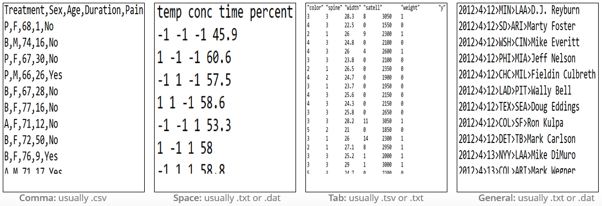
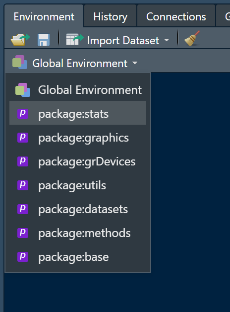
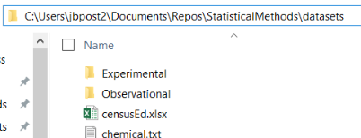
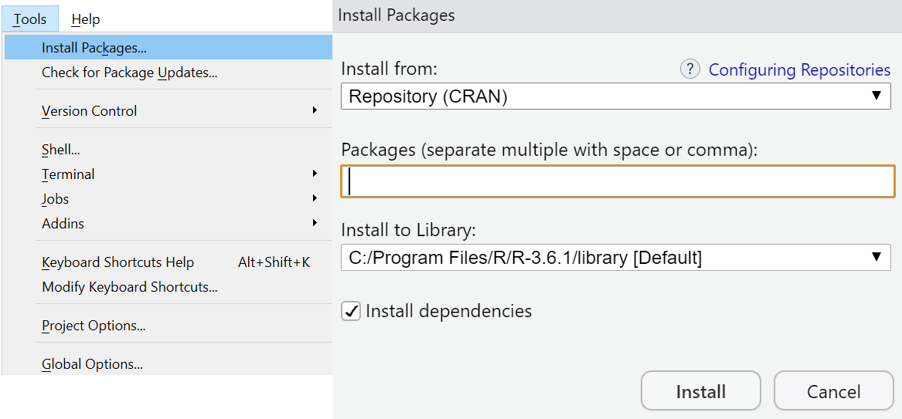

Chapter 26 R Markdown
This is an R Markdown document. Markdown is a simple formatting syntax for authoring HTML, PDF, and MS Word documents. For more details on using R Markdown see http://rmarkdown.rstudio.com.
When you click the Knit button a document will be generated that includes both content as well as the output of any embedded R code chunks within the document.
Where do we go from here?
Briefly investigate:
Markdown syntax
Code chunks and their options
Changing type of output
Documenting with Markdown
Markdown syntax
[Cheat Sheet link](https://www.rstudio.com/wp-content/uploads/2015/03/rmarkdown-reference.pdf)becomes Cheat Sheet link
Documenting with Markdown
Markdown syntax
[Cheat Sheet link](https://www.rstudio.com/wp-content/uploads/2015/03/rmarkdown-reference.pdf)becomes Cheat Sheet link# Header 1becomes a large font headerHeader 2becomes a slightly smaller font headerGoes to 6 headers
- Use of headers can automatically create a Table of Contents!
Documenting with Markdown
Markdown syntax
[Cheat Sheet link](https://www.rstudio.com/wp-content/uploads/2015/03/rmarkdown-reference.pdf)becomes Cheat Sheet link# Header 1becomes a large font headerHeader 2becomes a slightly smaller font headerGoes to 6 headers
- Use of headers can automatically create a Table of Contents!
boldand__bold__`code` becomes
code
Documenting with Markdown
Markdown syntax
Can do lists: be sure to end each line with two spaces!
- Indent sub lists four spaces
* unordered list
* item 2
+ sub-item 1
+ sub-item 2
1. ordered list
2. item 2
+ sub-item 1
+ sub-item 2 - unordered list
- item 2
- sub-item 1
- sub-item 2
- sub-item 1
- ordered list
- item 2
- sub-item 1
- sub-item 2
- sub-item 1
Documenting with Markdown
Markdown syntax
- Can include nice tables (renders differently in slides than html doc)
Table Header | Second Header | Col 3
------------- | ------------- | -----------
Table Cell | Cell (1, 2) | Cell (1, 3)
Cell (2, 1) | Cell (2, 2) | Cell (2, 3) | Table Header | Second Header | Col 3 |
|---|---|---|
| Table Cell | Cell (1, 2) | Cell (1, 3) |
| Cell (2, 1) | Cell (2, 2) | Cell (2, 3) |
Documenting with Markdown
Code chunks and their options
Any R code can go into the chunk
Chunks evaluate sequentially (can use output from prior chunk)
- Code can be added in line: Ex: The Iris dataset has 150 observations
- Added by beginning with back-tick
rand ending with a back-tick: Iris has `rlength(iris$Sepal.Length)`
Documenting with Markdown
Code chunks and their options
Many options depending on chunk purpose!
Can hide/show code with
echo = FALSE/TRUECan choose if code is evaluated with
eval = TRUE/FALSEmessage = TRUE/FALSEandwarning = TRUE/FALSEcan turn on/off displaying messages/warnings
Documenting with Markdown
Code chunks and their options
Many options depending on chunk purpose!
Can hide/show code with
echo = FALSE/TRUECan choose if code is evaluated with
eval = TRUE/FALSEmessage = TRUE/FALSEandwarning = TRUE/FALSEcan turn on/off displaying messages/warningsCan set global options for all chunks
opts_chunk$set(echo = FALSE, eval = TRUE, warning = FALSE)- Allows for easy change of audience!
Documenting with Markdown
Changing type of output
R Markdown really flexible!

Documenting with Markdown
Changing type of output
Change output type in the YAML header:
- Use CTRL/CMD + Shift + k or the Knit menu:

- Use code explicity:
rmarkdown::render("file.Rmd", output_format = "word_document")
Documenting with Markdown
Changing type of output
For HTML & PDF can include Table of Contents with options
output:
html_document:
toc: true
toc_float: trueDocumenting with Markdown
Changing type of output
For HTML & PDF can include Table of Contents with options
output:
html_document:
toc: true
toc_float: trueFor HTML another option is to make the code chunks hidden by default, but visible with a click:
output:
html_document:
code_folding: hideDocumenting with Markdown
Changing type of output
HTML documents inherently interactive
- Widgets can be included with appropriate R package
library(leaflet)
leaflet() %>%
setView(174.764, -36.877, zoom = 16) %>%
addTiles() %>%
addMarkers(174.764, -36.877, popup = "Maungawhau") Documenting with Markdown
Changing type of output
Documenting with Markdown
Changing type of output
- PDF
- Install MikTex and update its packages
output: pdf_document Documenting with Markdown
Changing type of output
- PDF
- Install MikTex and update its packages
output: pdf_document - Word
output: word_document- Slides ( for new slide)
Recap/Next Up!
Data manipulation idea
Documenting with Markdown
Logical statements
dplyrCreating new variables
- Conditional execution (if then)
- For loops
- Vectorized functions
- Conditional execution (if then)
Reshaping Data
Where are we at?
Data manipulation idea
Documenting with Markdown
Logical statements
dplyrCreating new variables
- Conditional execution (if then)
- For loops
- Vectorized functions
- Conditional execution (if then)
Reshaping Data
Data manipulation idea
We may want to subset our full data set or create new data
- Grab only certain types of observations (filter rows)

Logical statements
Goal: Subset rows or columns
- logical statement - comparison that resolves as
TRUEorFALSE
Logical statements
Goal: Subset rows or columns
- logical statement - comparison that resolves as
TRUEorFALSE
## [1] TRUE## [1] FALSE FALSE TRUE FALSE## [1] FALSELogical statements
Goal: Subset rows or columns
- logical statement - useful for indexing an R object
## # A tibble: 150 x 6
## Sepal.Length Sepal.Width Petal.Length Petal.Width Species extra
## <dbl> <dbl> <dbl> <dbl> <fct> <chr>
## 1 5.1 3.5 1.4 0.2 setosa a
## 2 4.9 3 1.4 0.2 setosa a
## 3 4.7 3.2 1.3 0.2 setosa a
## 4 4.6 3.1 1.5 0.2 setosa a
## 5 5 3.6 1.4 0.2 setosa a
## 6 5.4 3.9 1.7 0.4 setosa a
## 7 4.6 3.4 1.4 0.3 setosa a
## 8 5 3.4 1.5 0.2 setosa a
## 9 4.4 2.9 1.4 0.2 setosa a
## 10 4.9 3.1 1.5 0.1 setosa a
## # ... with 140 more rowsLogical statements
Goal: Subset rows or columns
logical statement - useful for indexing an R object
- Concept:
- Feed index a vector of
TRUE/FALSEor0/1values
- R returns elements where
TRUEor1occurred
- Feed index a vector of
Logical statements
logical statement - useful for indexing an R object
- Concept:
- Feed index a vector of
TRUE/FALSEor0/1values
- R returns elements where
TRUEor1occurred
- Feed index a vector of
## [1] TRUE TRUE TRUE TRUE TRUE TRUE TRUE TRUE TRUE TRUE TRUE TRUE
## [13] TRUE TRUE TRUE TRUE TRUE TRUE TRUE TRUE TRUE TRUE TRUE TRUE
## [25] TRUE TRUE TRUE TRUE TRUE TRUE TRUE TRUE TRUE TRUE TRUE TRUE
## [37] TRUE TRUE TRUE TRUE TRUE TRUE TRUE TRUE TRUE TRUE TRUE TRUE
## [49] TRUE TRUE FALSE FALSE FALSE FALSE FALSE FALSE FALSE FALSE FALSE FALSE
## [61] FALSE FALSE FALSE FALSE FALSE FALSE FALSE FALSE FALSE FALSE FALSE FALSE
## [73] FALSE FALSE FALSE FALSE FALSE FALSE FALSE FALSE FALSE FALSE FALSE FALSE
## [85] FALSE FALSE FALSE FALSE FALSE FALSE FALSE FALSE FALSE FALSE FALSE FALSE
## [97] FALSE FALSE FALSE FALSE FALSE FALSE FALSE FALSE FALSE FALSE FALSE FALSE
## [109] FALSE FALSE FALSE FALSE FALSE FALSE FALSE FALSE FALSE FALSE FALSE FALSE
## [121] FALSE FALSE FALSE FALSE FALSE FALSE FALSE FALSE FALSE FALSE FALSE FALSE
## [133] FALSE FALSE FALSE FALSE FALSE FALSE FALSE FALSE FALSE FALSE FALSE FALSE
## [145] FALSE FALSE FALSE FALSE FALSE FALSELogical statements
Goal: Subset rows or columns
- logical statement - useful for indexing an R object
## # A tibble: 50 x 6
## Sepal.Length Sepal.Width Petal.Length Petal.Width Species extra
## <dbl> <dbl> <dbl> <dbl> <fct> <chr>
## 1 5.1 3.5 1.4 0.2 setosa a
## 2 4.9 3 1.4 0.2 setosa a
## 3 4.7 3.2 1.3 0.2 setosa a
## 4 4.6 3.1 1.5 0.2 setosa a
## 5 5 3.6 1.4 0.2 setosa a
## 6 5.4 3.9 1.7 0.4 setosa a
## 7 4.6 3.4 1.4 0.3 setosa a
## 8 5 3.4 1.5 0.2 setosa a
## 9 4.4 2.9 1.4 0.2 setosa a
## 10 4.9 3.1 1.5 0.1 setosa a
## # ... with 40 more rowsLogical statements
Goal: Subset rows or columns
logical statement - useful for indexing an R object
Similarly, can use
subsetfunction
## # A tibble: 50 x 6
## Sepal.Length Sepal.Width Petal.Length Petal.Width Species extra
## <dbl> <dbl> <dbl> <dbl> <fct> <chr>
## 1 5.1 3.5 1.4 0.2 setosa a
## 2 4.9 3 1.4 0.2 setosa a
## 3 4.7 3.2 1.3 0.2 setosa a
## 4 4.6 3.1 1.5 0.2 setosa a
## 5 5 3.6 1.4 0.2 setosa a
## 6 5.4 3.9 1.7 0.4 setosa a
## 7 4.6 3.4 1.4 0.3 setosa a
## 8 5 3.4 1.5 0.2 setosa a
## 9 4.4 2.9 1.4 0.2 setosa a
## 10 4.9 3.1 1.5 0.1 setosa a
## # ... with 40 more rowsdplyr
Goal: Subset rows or columns
logical statement - useful for indexing an R object
Similarly, can use
filterfromdplyr(installed withtidyverse)
## # A tibble: 50 x 6
## Sepal.Length Sepal.Width Petal.Length Petal.Width Species extra
## <dbl> <dbl> <dbl> <dbl> <fct> <chr>
## 1 5.1 3.5 1.4 0.2 setosa a
## 2 4.9 3 1.4 0.2 setosa a
## 3 4.7 3.2 1.3 0.2 setosa a
## 4 4.6 3.1 1.5 0.2 setosa a
## 5 5 3.6 1.4 0.2 setosa a
## 6 5.4 3.9 1.7 0.4 setosa a
## 7 4.6 3.4 1.4 0.3 setosa a
## 8 5 3.4 1.5 0.2 setosa a
## 9 4.4 2.9 1.4 0.2 setosa a
## 10 4.9 3.1 1.5 0.1 setosa a
## # ... with 40 more rowsLogical statements
Compound logicals via Logical Operators
&‘and’|‘or’
| Operator | A,B true | A true, B false | A,B false |
|---|---|---|---|
& |
A & B = TRUE |
A & B = FALSE |
A & B = FALSE |
| |
A | B = TRUE |
A | B = TRUE |
A | B = FALSE |
Logical statements
Compound logicals via Logical Operators
&‘and’|‘or’
| Operator | A,B true | A true, B false | A,B false |
|---|---|---|---|
& |
A & B = TRUE |
A & B = FALSE |
A & B = FALSE |
| |
A | B = TRUE |
A | B = TRUE |
A | B = FALSE |
&&and||are alternatives- Looks at only first comparison if given a vector of comparisons
Logical statements
Compound logicals via Logical Operators
## [1] 0.1680415 0.8075164 0.3849424 0.3277343 0.6021007 0.6043941 0.1246334
## [8] 0.2946009 0.5776099 0.6309793## [1] TRUE TRUE FALSE FALSE FALSE FALSE TRUE FALSE FALSE FALSE## [1] TRUELogical statements
Goal: Subset rows or columns
- Only pull out large petal setosa flowers
## [1] FALSE FALSE FALSE FALSE FALSE TRUE FALSE FALSE FALSE FALSE FALSE FALSE
## [13] FALSE FALSE FALSE FALSE FALSE FALSE FALSE FALSE FALSE FALSE FALSE TRUE
## [25] FALSE FALSE TRUE FALSE FALSE FALSE FALSE FALSE FALSE FALSE FALSE FALSE
## [37] FALSE FALSE FALSE FALSE FALSE FALSE FALSE TRUE TRUE FALSE FALSE FALSE
## [49] FALSE FALSE FALSE FALSE FALSE FALSE FALSE FALSE FALSE FALSE FALSE FALSE
## [61] FALSE FALSE FALSE FALSE FALSE FALSE FALSE FALSE FALSE FALSE FALSE FALSE
## [73] FALSE FALSE FALSE FALSE FALSE FALSE FALSE FALSE FALSE FALSE FALSE FALSE
## [85] FALSE FALSE FALSE FALSE FALSE FALSE FALSE FALSE FALSE FALSE FALSE FALSE
## [97] FALSE FALSE FALSE FALSE FALSE FALSE FALSE FALSE FALSE FALSE FALSE FALSE
## [109] FALSE FALSE FALSE FALSE FALSE FALSE FALSE FALSE FALSE FALSE FALSE FALSE
## [121] FALSE FALSE FALSE FALSE FALSE FALSE FALSE FALSE FALSE FALSE FALSE FALSE
## [133] FALSE FALSE FALSE FALSE FALSE FALSE FALSE FALSE FALSE FALSE FALSE FALSE
## [145] FALSE FALSE FALSE FALSE FALSE FALSELogical statements
Goal: Subset rows or columns
- Only pull out large petal setosa flowers
## # A tibble: 5 x 6
## Sepal.Length Sepal.Width Petal.Length Petal.Width Species extra
## <dbl> <dbl> <dbl> <dbl> <fct> <chr>
## 1 5.4 3.9 1.7 0.4 setosa a
## 2 5.1 3.3 1.7 0.5 setosa a
## 3 5 3.4 1.6 0.4 setosa a
## 4 5 3.5 1.6 0.6 setosa a
## 5 5.1 3.8 1.9 0.4 setosa aLogical statements
Goal: Subset rows or columns
Only pull out large petal setosa flowers
Easier with
subsetorfilter!
## # A tibble: 5 x 6
## Sepal.Length Sepal.Width Petal.Length Petal.Width Species extra
## <dbl> <dbl> <dbl> <dbl> <fct> <chr>
## 1 5.4 3.9 1.7 0.4 setosa a
## 2 5.1 3.3 1.7 0.5 setosa a
## 3 5 3.4 1.6 0.4 setosa a
## 4 5 3.5 1.6 0.6 setosa a
## 5 5.1 3.8 1.9 0.4 setosa adplyr
Overview of dplyr and tidyr packages
dplrypackage made for most standard data manipulation taskstidyrpackage reshapes dataBoth part of
tidyverseMake sure
library(tidyverse)has been run!
dplyr
- Basic commands
tbl_df()- convert data frame to one with better printing
filter()- subset rows
arrange()- reorder rows
select()- subset columns
rename()- rename columns
mutate()- add newly created column
transmute()- create new variable
group_by()- group rows by a variable
summarise()- apply basic function to data
Tidyverse Syntax
- Reason to prefer
dplyrand packages from thetidyverse
- Fast!
- Good defaults
- All packages have similar syntax! All work on
tibbles(data frames)
- Syntax:
function(tibble, actions, ...)
dplyr
tbl_df() - convert data frame to one with better printing and no simplification
- Just ‘wrap’ data frame
## # A tibble: 4 x 22
## playerID yearID stint teamID lgID G AB R H X2B X3B HR
## <chr> <int> <int> <fct> <fct> <int> <int> <int> <int> <int> <int> <int>
## 1 abercda~ 1871 1 TRO NA 1 4 0 0 0 0 0
## 2 addybo01 1871 1 RC1 NA 25 118 30 32 6 0 0
## 3 allisar~ 1871 1 CL1 NA 29 137 28 40 4 5 0
## 4 allisdo~ 1871 1 WS3 NA 27 133 28 44 10 2 2
## # ... with 10 more variables: RBI <int>, SB <int>, CS <int>, BB <int>,
## # SO <int>, IBB <int>, HBP <int>, SH <int>, SF <int>, GIDP <int>dplyr
## # A tibble: 105,861 x 22
## playerID yearID stint teamID lgID G AB R H X2B X3B HR
## <chr> <int> <int> <fct> <fct> <int> <int> <int> <int> <int> <int> <int>
## 1 abercda~ 1871 1 TRO NA 1 4 0 0 0 0 0
## 2 addybo01 1871 1 RC1 NA 25 118 30 32 6 0 0
## 3 allisar~ 1871 1 CL1 NA 29 137 28 40 4 5 0
## 4 allisdo~ 1871 1 WS3 NA 27 133 28 44 10 2 2
## 5 ansonca~ 1871 1 RC1 NA 25 120 29 39 11 3 0
## 6 armstbo~ 1871 1 FW1 NA 12 49 9 11 2 1 0
## 7 barkeal~ 1871 1 RC1 NA 1 4 0 1 0 0 0
## 8 barnero~ 1871 1 BS1 NA 31 157 66 63 10 9 0
## 9 barrebi~ 1871 1 FW1 NA 1 5 1 1 1 0 0
## 10 barrofr~ 1871 1 BS1 NA 18 86 13 13 2 1 0
## # ... with 105,851 more rows, and 10 more variables: RBI <int>, SB <int>,
## # CS <int>, BB <int>, SO <int>, IBB <int>, HBP <int>, SH <int>, SF <int>,
## # GIDP <int>- If data read in with
haven,readxl, orreadrprobably in this format!
dplyr
filter() - subset rows
- Use
filter()to obtain only PIT data
## # A tibble: 4,817 x 22
## playerID yearID stint teamID lgID G AB R H X2B X3B HR
## <chr> <int> <int> <fct> <fct> <int> <int> <int> <int> <int> <int> <int>
## 1 barklsa~ 1887 1 PIT NL 89 340 44 76 10 4 1
## 2 beeched~ 1887 1 PIT NL 41 169 15 41 8 0 2
## 3 bishobi~ 1887 1 PIT NL 3 9 0 0 0 0 0
## 4 brownto~ 1887 1 PIT NL 47 192 30 47 3 4 0
## 5 carrofr~ 1887 1 PIT NL 102 421 71 138 24 15 6
## 6 colemjo~ 1887 1 PIT NL 115 475 75 139 21 11 2
## 7 dalryab~ 1887 1 PIT NL 92 358 45 76 18 5 2
## 8 fieldjo~ 1887 1 PIT NL 43 164 26 44 9 2 0
## 9 galvipu~ 1887 1 PIT NL 49 193 10 41 7 3 2
## 10 kuehnbi~ 1887 1 PIT NL 102 402 68 120 18 15 1
## # ... with 4,807 more rows, and 10 more variables: RBI <int>, SB <int>,
## # CS <int>, BB <int>, SO <int>, IBB <int>, HBP <int>, SH <int>, SF <int>,
## # GIDP <int>dplyr
filter() - subset rows
- Multiple filters
## # A tibble: 46 x 22
## playerID yearID stint teamID lgID G AB R H X2B X3B HR
## <chr> <int> <int> <fct> <fct> <int> <int> <int> <int> <int> <int> <int>
## 1 anderji~ 2000 1 PIT NL 27 50 5 7 1 0 0
## 2 arroybr~ 2000 1 PIT NL 21 21 2 3 2 0 0
## 3 avenbr01 2000 1 PIT NL 72 148 18 37 11 0 5
## 4 benjami~ 2000 1 PIT NL 93 233 28 63 18 2 2
## 5 bensokr~ 2000 1 PIT NL 32 65 3 6 2 0 0
## 6 brownad~ 2000 1 PIT NL 104 308 64 97 18 3 4
## 7 brownem~ 2000 1 PIT NL 50 119 13 26 5 0 3
## 8 chrisja~ 2000 1 PIT NL 44 0 0 0 0 0 0
## 9 clontbr~ 2000 1 PIT NL 5 0 1 0 0 0 0
## 10 cordewi~ 2000 1 PIT NL 89 348 46 98 24 3 16
## # ... with 36 more rows, and 10 more variables: RBI <int>, SB <int>, CS <int>,
## # BB <int>, SO <int>, IBB <int>, HBP <int>, SH <int>, SF <int>, GIDP <int>dplyr
arrange() - reorder rows
## # A tibble: 105,861 x 22
## playerID yearID stint teamID lgID G AB R H X2B X3B HR
## <chr> <int> <int> <fct> <fct> <int> <int> <int> <int> <int> <int> <int>
## 1 berrych~ 1884 1 ALT UA 7 25 2 6 0 0 0
## 2 brownji~ 1884 1 ALT UA 21 88 12 22 2 2 1
## 3 carropa~ 1884 1 ALT UA 11 49 4 13 1 0 0
## 4 connojo~ 1884 1 ALT UA 3 11 0 1 0 0 0
## 5 crosscl~ 1884 1 ALT UA 2 7 1 4 1 0 0
## 6 daisege~ 1884 1 ALT UA 1 4 0 0 0 0 0
## 7 doughch~ 1884 1 ALT UA 23 85 6 22 5 0 0
## 8 gradyjo~ 1884 1 ALT UA 9 36 5 11 3 0 0
## 9 harrifr~ 1884 1 ALT UA 24 95 10 25 2 1 0
## 10 koonsha~ 1884 1 ALT UA 21 78 8 18 2 1 0
## # ... with 105,851 more rows, and 10 more variables: RBI <int>, SB <int>,
## # CS <int>, BB <int>, SO <int>, IBB <int>, HBP <int>, SH <int>, SF <int>,
## # GIDP <int>dplyr
arrange() - reorder rows
## # A tibble: 105,861 x 22
## playerID yearID stint teamID lgID G AB R H X2B X3B HR
## <chr> <int> <int> <fct> <fct> <int> <int> <int> <int> <int> <int> <int>
## 1 daisege~ 1884 1 ALT UA 1 4 0 0 0 0 0
## 2 crosscl~ 1884 1 ALT UA 2 7 1 4 1 0 0
## 3 manloch~ 1884 1 ALT UA 2 7 1 3 0 0 0
## 4 connojo~ 1884 1 ALT UA 3 11 0 1 0 0 0
## 5 shafff01 1884 1 ALT UA 6 19 1 3 0 0 0
## 6 berrych~ 1884 1 ALT UA 7 25 2 6 0 0 0
## 7 noftsge~ 1884 1 ALT UA 7 25 0 1 0 0 0
## 8 learyja~ 1884 1 ALT UA 8 33 1 3 0 0 0
## 9 gradyjo~ 1884 1 ALT UA 9 36 5 11 3 0 0
## 10 carropa~ 1884 1 ALT UA 11 49 4 13 1 0 0
## # ... with 105,851 more rows, and 10 more variables: RBI <int>, SB <int>,
## # CS <int>, BB <int>, SO <int>, IBB <int>, HBP <int>, SH <int>, SF <int>,
## # GIDP <int>dplyr
arrange() - reorder rows
## # A tibble: 105,861 x 22
## playerID yearID stint teamID lgID G AB R H X2B X3B HR
## <chr> <int> <int> <fct> <fct> <int> <int> <int> <int> <int> <int> <int>
## 1 smithge~ 1884 1 ALT UA 25 108 9 34 8 1 0
## 2 harrifr~ 1884 1 ALT UA 24 95 10 25 2 1 0
## 3 doughch~ 1884 1 ALT UA 23 85 6 22 5 0 0
## 4 murphjo~ 1884 1 ALT UA 23 94 10 14 1 0 0
## 5 brownji~ 1884 1 ALT UA 21 88 12 22 2 2 1
## 6 koonsha~ 1884 1 ALT UA 21 78 8 18 2 1 0
## 7 mooreje~ 1884 1 ALT UA 20 80 10 25 3 1 1
## 8 shaffta~ 1884 1 ALT UA 13 55 10 18 2 0 0
## 9 carropa~ 1884 1 ALT UA 11 49 4 13 1 0 0
## 10 gradyjo~ 1884 1 ALT UA 9 36 5 11 3 0 0
## # ... with 105,851 more rows, and 10 more variables: RBI <int>, SB <int>,
## # CS <int>, BB <int>, SO <int>, IBB <int>, HBP <int>, SH <int>, SF <int>,
## # GIDP <int>Data manipulation idea
We may want to subset our full data set or create new data
- Look at only certain variables (select columns)

dplyr
select() - subset columns
- Often only want select variables (saw
$and[ , ]) select()function has same syntax as otherdplyrfunctions!
## # A tibble: 105,861 x 1
## X2B
## <int>
## 1 0
## 2 6
## 3 4
## 4 10
## 5 11
## 6 2
## 7 0
## 8 10
## 9 1
## 10 2
## # ... with 105,851 more rowsdplyr
select() - subset columns
- Often only want select variables (saw
$and[ , ]) select()function has same syntax as otherdplyrfunctions!
## # A tibble: 105,861 x 2
## playerID X2B
## <chr> <int>
## 1 abercda01 0
## 2 addybo01 6
## 3 allisar01 4
## 4 allisdo01 10
## 5 ansonca01 11
## 6 armstbo01 2
## 7 barkeal01 0
## 8 barnero01 10
## 9 barrebi01 1
## 10 barrofr01 2
## # ... with 105,851 more rowsAside: Piping or Chaining
- Applying multiple functions: nesting hard to parse!
- Piping or Chaining with
%>%operator helps
## # A tibble: 4,817 x 3
## playerID G X2B
## <chr> <int> <int>
## 1 wanerpa01 154 62
## 2 wanerpa01 148 53
## 3 sanchfr01 157 53
## 4 wanerpa01 152 50
## 5 comorad01 152 47
## 6 mclouna01 152 46
## 7 wagneho01 135 45
## 8 parkeda01 158 45
## 9 vanslan01 154 45
## 10 wagneho01 132 44
## # ... with 4,807 more rowsAside: Piping or Chaining
- Applying multiple functions: nesting hard to parse!
- Piping or Chaining with
%>%operator helps
## # A tibble: 4,817 x 3
## playerID G X2B
## <chr> <int> <int>
## 1 wanerpa01 154 62
## 2 wanerpa01 148 53
## 3 sanchfr01 157 53
## 4 wanerpa01 152 50
## 5 comorad01 152 47
## 6 mclouna01 152 46
## 7 wagneho01 135 45
## 8 parkeda01 158 45
## 9 vanslan01 154 45
## 10 wagneho01 132 44
## # ... with 4,807 more rowsAside: Piping or Chaining
- Generically, pipe does the following
x %>% f(y) turns into f(x,y)
x %>% f(y) %>% g(z) turns into g(f(x, y), z)
- Can be used with functions outside the tidyverse if this structure works!
dplyr
select() - subset columns
- Many ways to select variables
## # A tibble: 105,861 x 3
## X2B X3B HR
## <int> <int> <int>
## 1 0 0 0
## 2 6 0 0
## 3 4 5 0
## 4 10 2 2
## 5 11 3 0
## 6 2 1 0
## 7 0 0 0
## 8 10 9 0
## 9 1 0 0
## 10 2 1 0
## # ... with 105,851 more rowsdplyr
select() - subset columns
- Many ways to select variables
## # A tibble: 105,861 x 2
## X2B X3B
## <int> <int>
## 1 0 0
## 2 6 0
## 3 4 5
## 4 10 2
## 5 11 3
## 6 2 1
## 7 0 0
## 8 10 9
## 9 1 0
## 10 2 1
## # ... with 105,851 more rowsdplyr
select() - subset columns
- Many ways to select variables
## # A tibble: 105,861 x 2
## X2B X3B
## <int> <int>
## 1 0 0
## 2 6 0
## 3 4 5
## 4 10 2
## 5 11 3
## 6 2 1
## 7 0 0
## 8 10 9
## 9 1 0
## 10 2 1
## # ... with 105,851 more rowsdplyr
select() - subset columns
- Many ways to select variables
## # A tibble: 105,861 x 7
## X2B X3B playerID yearID teamID lgID G
## <int> <int> <chr> <int> <fct> <fct> <int>
## 1 0 0 abercda01 1871 TRO NA 1
## 2 6 0 addybo01 1871 RC1 NA 25
## 3 4 5 allisar01 1871 CL1 NA 29
## 4 10 2 allisdo01 1871 WS3 NA 27
## 5 11 3 ansonca01 1871 RC1 NA 25
## 6 2 1 armstbo01 1871 FW1 NA 12
## 7 0 0 barkeal01 1871 RC1 NA 1
## 8 10 9 barnero01 1871 BS1 NA 31
## 9 1 0 barrebi01 1871 FW1 NA 1
## 10 2 1 barrofr01 1871 BS1 NA 18
## # ... with 105,851 more rowsdplyr
select() - subset columns
- Sometimes want to rename variables
#rename our previous
Batting %>%
select(starts_with("X"), ends_with("ID"), G) %>% rename("Doubles" = X2B, "Triples" = X3B)## # A tibble: 105,861 x 7
## Doubles Triples playerID yearID teamID lgID G
## <int> <int> <chr> <int> <fct> <fct> <int>
## 1 0 0 abercda01 1871 TRO NA 1
## 2 6 0 addybo01 1871 RC1 NA 25
## 3 4 5 allisar01 1871 CL1 NA 29
## 4 10 2 allisdo01 1871 WS3 NA 27
## 5 11 3 ansonca01 1871 RC1 NA 25
## 6 2 1 armstbo01 1871 FW1 NA 12
## 7 0 0 barkeal01 1871 RC1 NA 1
## 8 10 9 barnero01 1871 BS1 NA 31
## 9 1 0 barrebi01 1871 FW1 NA 1
## 10 2 1 barrofr01 1871 BS1 NA 18
## # ... with 105,851 more rowsdplyr
select() - subset columns
- May want to reorder variables
## # A tibble: 105,861 x 22
## playerID HR yearID stint teamID lgID G AB R H X2B X3B
## <chr> <int> <int> <int> <fct> <fct> <int> <int> <int> <int> <int> <int>
## 1 abercda~ 0 1871 1 TRO NA 1 4 0 0 0 0
## 2 addybo01 0 1871 1 RC1 NA 25 118 30 32 6 0
## 3 allisar~ 0 1871 1 CL1 NA 29 137 28 40 4 5
## 4 allisdo~ 2 1871 1 WS3 NA 27 133 28 44 10 2
## 5 ansonca~ 0 1871 1 RC1 NA 25 120 29 39 11 3
## 6 armstbo~ 0 1871 1 FW1 NA 12 49 9 11 2 1
## 7 barkeal~ 0 1871 1 RC1 NA 1 4 0 1 0 0
## 8 barnero~ 0 1871 1 BS1 NA 31 157 66 63 10 9
## 9 barrebi~ 0 1871 1 FW1 NA 1 5 1 1 1 0
## 10 barrofr~ 0 1871 1 BS1 NA 18 86 13 13 2 1
## # ... with 105,851 more rows, and 10 more variables: RBI <int>, SB <int>,
## # CS <int>, BB <int>, SO <int>, IBB <int>, HBP <int>, SH <int>, SF <int>,
## # GIDP <int>dplyr
- Basic commands
tbl_df()- convert data frame to one with better printingfilter()- subset rowsarrange()- reorder rowsselect()- subset columns
- Many
joinsto combine tibbles too! (Similar to SQL)
Recap/Next Up!
Data manipulation idea
Documenting with Markdown
Logical statements
dplyrCreating new variables
- Conditional execution (if then)
- For loops
- Vectorized functions
- Conditional execution (if then)
Reshaping Data
Recap/Next Up!
Data manipulation idea
Documenting with Markdown
Logical statements
dplyrCreating new variables
- Conditional execution (if then)
- For loops
- Vectorized functions
- Conditional execution (if then)
Reshaping data
Data manipulation idea
We may want to subset our full data set or create new data
- Create new variables

Creating New Variables
Given a data frame and an appropriate length vector (new variable) can use cbind (column bind)
## 'data.frame': 150 obs. of 7 variables:
## $ Sepal.Length: num 5.1 4.9 4.7 4.6 5 5.4 4.6 5 4.4 4.9 ...
## $ Sepal.Width : num 3.5 3 3.2 3.1 3.6 3.9 3.4 3.4 2.9 3.1 ...
## $ Petal.Length: num 1.4 1.4 1.3 1.5 1.4 1.7 1.4 1.5 1.4 1.5 ...
## $ Petal.Width : num 0.2 0.2 0.2 0.2 0.2 0.4 0.3 0.2 0.2 0.1 ...
## $ Species : Factor w/ 3 levels "setosa","versicolor",..: 1 1 1 1 1 1 1 1 1 1 ...
## $ extra : chr "a" "a" "a" "a" ...
## $ extra : Factor w/ 1 level "a": 1 1 1 1 1 1 1 1 1 1 ...Creating New Variables
Or simply add as a named (list) element!
## Classes 'tbl_df', 'tbl' and 'data.frame': 150 obs. of 6 variables:
## $ Sepal.Length: num 5.1 4.9 4.7 4.6 5 5.4 4.6 5 4.4 4.9 ...
## $ Sepal.Width : num 3.5 3 3.2 3.1 3.6 3.9 3.4 3.4 2.9 3.1 ...
## $ Petal.Length: num 1.4 1.4 1.3 1.5 1.4 1.7 1.4 1.5 1.4 1.5 ...
## $ Petal.Width : num 0.2 0.2 0.2 0.2 0.2 0.4 0.3 0.2 0.2 0.1 ...
## $ Species : Factor w/ 3 levels "setosa","versicolor",..: 1 1 1 1 1 1 1 1 1 1 ...
## $ extra : chr "a" "a" "a" "a" ...Creating New Variables
Better method: use dplyr!
mutate()- add newly created column(s) to current data frametransmute()- create new data frame with created variable(s)
Creating New Variables
Better method: use dplyr!
mutate()- add newly created column(s) to current data frametransmute()- create new data frame with created variable(s)Syntax:
mutate(data, newVarName = functionOfData, newVarName2 = functionOfData, ...)
Creating New Variables
- Consider a data set on movie ratings
## # A tibble: 146 x 23
## film year rottentomatoes rottentomatoes_~ metacritic metacritic_user imdb
## <chr> <dbl> <int> <int> <int> <dbl> <dbl>
## 1 Aven~ 2015 74 86 66 7.1 7.8
## 2 Cind~ 2015 85 80 67 7.5 7.1
## 3 Ant-~ 2015 80 90 64 8.1 7.8
## 4 Do Y~ 2015 18 84 22 4.7 5.4
## 5 Hot ~ 2015 14 28 29 3.4 5.1
## 6 The ~ 2015 63 62 50 6.8 7.2
## 7 Irra~ 2015 42 53 53 7.6 6.9
## 8 Top ~ 2014 86 64 81 6.8 6.5
## 9 Shau~ 2015 99 82 81 8.8 7.4
## 10 Love~ 2015 89 87 80 8.5 7.8
## # ... with 136 more rows, and 16 more variables: fandango_stars <dbl>,
## # fandango_ratingvalue <dbl>, rt_norm <dbl>, rt_user_norm <dbl>,
## # metacritic_norm <dbl>, metacritic_user_nom <dbl>, imdb_norm <dbl>,
## # rt_norm_round <dbl>, rt_user_norm_round <dbl>, metacritic_norm_round <dbl>,
## # metacritic_user_norm_round <dbl>, imdb_norm_round <dbl>,
## # metacritic_user_vote_count <int>, imdb_user_vote_count <int>,
## # fandango_votes <int>, fandango_difference <dbl>Creating New Variables
mutate()- add newly created column(s) to current data frame
#Create an average rottentomatoes score variable
fandango %>% mutate(avgRotten = (rottentomatoes + rottentomatoes_user)/2)## # A tibble: 146 x 24
## film year rottentomatoes rottentomatoes_~ metacritic metacritic_user imdb
## <chr> <dbl> <int> <int> <int> <dbl> <dbl>
## 1 Aven~ 2015 74 86 66 7.1 7.8
## 2 Cind~ 2015 85 80 67 7.5 7.1
## 3 Ant-~ 2015 80 90 64 8.1 7.8
## 4 Do Y~ 2015 18 84 22 4.7 5.4
## 5 Hot ~ 2015 14 28 29 3.4 5.1
## 6 The ~ 2015 63 62 50 6.8 7.2
## 7 Irra~ 2015 42 53 53 7.6 6.9
## 8 Top ~ 2014 86 64 81 6.8 6.5
## 9 Shau~ 2015 99 82 81 8.8 7.4
## 10 Love~ 2015 89 87 80 8.5 7.8
## # ... with 136 more rows, and 17 more variables: fandango_stars <dbl>,
## # fandango_ratingvalue <dbl>, rt_norm <dbl>, rt_user_norm <dbl>,
## # metacritic_norm <dbl>, metacritic_user_nom <dbl>, imdb_norm <dbl>,
## # rt_norm_round <dbl>, rt_user_norm_round <dbl>, metacritic_norm_round <dbl>,
## # metacritic_user_norm_round <dbl>, imdb_norm_round <dbl>,
## # metacritic_user_vote_count <int>, imdb_user_vote_count <int>,
## # fandango_votes <int>, fandango_difference <dbl>, avgRotten <dbl>Creating New Variables
mutate()- add newly created column(s) to current data frame
#can't see it!
fandango %>% mutate(avgRotten = (rottentomatoes + rottentomatoes_user)/2) %>%
select(film, year, avgRotten, everything())## # A tibble: 146 x 24
## film year avgRotten rottentomatoes rottentomatoes_~ metacritic
## <chr> <dbl> <dbl> <int> <int> <int>
## 1 Aven~ 2015 80 74 86 66
## 2 Cind~ 2015 82.5 85 80 67
## 3 Ant-~ 2015 85 80 90 64
## 4 Do Y~ 2015 51 18 84 22
## 5 Hot ~ 2015 21 14 28 29
## 6 The ~ 2015 62.5 63 62 50
## 7 Irra~ 2015 47.5 42 53 53
## 8 Top ~ 2014 75 86 64 81
## 9 Shau~ 2015 90.5 99 82 81
## 10 Love~ 2015 88 89 87 80
## # ... with 136 more rows, and 18 more variables: metacritic_user <dbl>,
## # imdb <dbl>, fandango_stars <dbl>, fandango_ratingvalue <dbl>,
## # rt_norm <dbl>, rt_user_norm <dbl>, metacritic_norm <dbl>,
## # metacritic_user_nom <dbl>, imdb_norm <dbl>, rt_norm_round <dbl>,
## # rt_user_norm_round <dbl>, metacritic_norm_round <dbl>,
## # metacritic_user_norm_round <dbl>, imdb_norm_round <dbl>,
## # metacritic_user_vote_count <int>, imdb_user_vote_count <int>,
## # fandango_votes <int>, fandango_difference <dbl>Creating New Variables
mutate()- add newly created column(s) to current data frameAdd more than one variable
fandango %>%
mutate(avgRotten = (rottentomatoes + rottentomatoes_user)/2,
avgMeta = (metacritic_norm + metacritic_user_nom)/2) %>%
select(film, year, avgRotten, avgMeta, everything())## # A tibble: 146 x 25
## film year avgRotten avgMeta rottentomatoes rottentomatoes_~ metacritic
## <chr> <dbl> <dbl> <dbl> <int> <int> <int>
## 1 Aven~ 2015 80 3.42 74 86 66
## 2 Cind~ 2015 82.5 3.55 85 80 67
## 3 Ant-~ 2015 85 3.62 80 90 64
## 4 Do Y~ 2015 51 1.72 18 84 22
## 5 Hot ~ 2015 21 1.58 14 28 29
## 6 The ~ 2015 62.5 2.95 63 62 50
## 7 Irra~ 2015 47.5 3.22 42 53 53
## 8 Top ~ 2014 75 3.72 86 64 81
## 9 Shau~ 2015 90.5 4.22 99 82 81
## 10 Love~ 2015 88 4.12 89 87 80
## # ... with 136 more rows, and 18 more variables: metacritic_user <dbl>,
## # imdb <dbl>, fandango_stars <dbl>, fandango_ratingvalue <dbl>,
## # rt_norm <dbl>, rt_user_norm <dbl>, metacritic_norm <dbl>,
## # metacritic_user_nom <dbl>, imdb_norm <dbl>, rt_norm_round <dbl>,
## # rt_user_norm_round <dbl>, metacritic_norm_round <dbl>,
## # metacritic_user_norm_round <dbl>, imdb_norm_round <dbl>,
## # metacritic_user_vote_count <int>, imdb_user_vote_count <int>,
## # fandango_votes <int>, fandango_difference <dbl>Creating New Variables
transmute()- create new data frame with created variable(s)
#transmute will keep the new variable(s) only
fandango %>% transmute(avgRotten = (rottentomatoes + rottentomatoes_user)/2)## # A tibble: 146 x 1
## avgRotten
## <dbl>
## 1 80
## 2 82.5
## 3 85
## 4 51
## 5 21
## 6 62.5
## 7 47.5
## 8 75
## 9 90.5
## 10 88
## # ... with 136 more rowsCreating New Variables
transmute()- create new data frame with created variable(s)
#transmute will keep the new variable(s) only
fandango %>% transmute(avgRotten = (rottentomatoes + rottentomatoes_user)/2,
avgMeta = (metacritic_norm + metacritic_user_nom)/2) ## # A tibble: 146 x 2
## avgRotten avgMeta
## <dbl> <dbl>
## 1 80 3.42
## 2 82.5 3.55
## 3 85 3.62
## 4 51 1.72
## 5 21 1.58
## 6 62.5 2.95
## 7 47.5 3.22
## 8 75 3.72
## 9 90.5 4.22
## 10 88 4.12
## # ... with 136 more rowsCreating New Variables
mutate and transmute can also use ‘window’ functions
- functions that take a vector of values and return another vector of values (see Cheat sheet)
## # A tibble: 146 x 2
## rottentomatoes cumulativeSum
## <int> <int>
## 1 74 74
## 2 85 159
## 3 80 239
## 4 18 257
## 5 14 271
## 6 63 334
## 7 42 376
## 8 86 462
## 9 99 561
## 10 89 650
## # ... with 136 more rowsCreating New Variables
mutate and transmute can also use some statistical functions
## # A tibble: 146 x 3
## rottentomatoes avg sd
## <int> <dbl> <dbl>
## 1 74 60.8 30.2
## 2 85 60.8 30.2
## 3 80 60.8 30.2
## 4 18 60.8 30.2
## 5 14 60.8 30.2
## 6 63 60.8 30.2
## 7 42 60.8 30.2
## 8 86 60.8 30.2
## 9 99 60.8 30.2
## 10 89 60.8 30.2
## # ... with 136 more rowsCreating New Variables
mutate and transmute can also use some statistical functions
group_byto create summaries for groups (more on this later)
fandango %>% select(year, rottentomatoes) %>%
group_by(year) %>% mutate(avg = mean(rottentomatoes), sd = sd(rottentomatoes))## # A tibble: 146 x 4
## # Groups: year [2]
## year rottentomatoes avg sd
## <dbl> <int> <dbl> <dbl>
## 1 2015 74 58.4 30.3
## 2 2015 85 58.4 30.3
## 3 2015 80 58.4 30.3
## 4 2015 18 58.4 30.3
## 5 2015 14 58.4 30.3
## 6 2015 63 58.4 30.3
## 7 2015 42 58.4 30.3
## 8 2014 86 79.5 21.6
## 9 2015 99 58.4 30.3
## 10 2015 89 58.4 30.3
## # ... with 136 more rowsCreating New Variables
Conditional Execution with If then, If then else
Often want to execute statements conditionally
ifthenelsesyntax
Creating New Variables
Conditional Execution with If then, If then else
Consider built-in data set
airqualitydaily air quality measurements in New York
from May (Day 1) to September (Day 153) in 1973
Creating New Variables
Conditional Execution with If then, If then else
- Consider built-in data set
airquality
## # A tibble: 153 x 7
## Ozone Solar.R Wind Temp Month Day status
## <int> <int> <dbl> <int> <int> <int> <chr>
## 1 41 190 7.4 67 5 1 LightWind
## 2 36 118 8 72 5 2 LightWind
## 3 12 149 12.6 74 5 3 Windy
## 4 18 313 11.5 62 5 4 Windy
## 5 NA NA 14.3 56 5 5 Windy
## 6 28 NA 14.9 66 5 6 Windy
## 7 23 299 8.6 65 5 7 LightWind
## 8 19 99 13.8 59 5 8 Windy
## 9 8 19 20.1 61 5 9 HighWind
## 10 NA 194 8.6 69 5 10 LightWind
## # ... with 143 more rowsCreating New Variables
Conditional Execution with If then, If then else
Want to code a wind category variable
- high wind days (15mph \(\leq\) wind)
- windy days (10mph \(\leq\) wind < 15mph)
- lightwind days (6mph \(\leq\) wind < 10mph)
- calm days (wind \(\leq\) 6mph)
Creating New Variables
Conditional Execution with If then, If then else
Want to code a wind category variable
Issue: if(condition) can only take in a single comparison
## Warning in if (airquality$Wind >= 15) {: the condition has length > 1 and only
## the first element will be usedCreating New Variables
Conditional Execution with If then, If then else
Want to code a wind category variable
- high wind days (15mph \(\leq\) wind)
- windy days (10mph \(\leq\) wind < 15mph)
- lightwind days (6mph \(\leq\) wind < 10mph)
- calm days (wind \(\leq\) 6mph)
Initial plan
loop through each observation
use if then else to determine wind status
Looping in R
There are a number of ways to do looping in R
for()
while()repeat()
- Idea:
- Run code repeatedly changing something each time
Looping in R
- Syntax
- index defines ‘counter’ or variable that varies
- ‘values’ define which values index takes on
Looping in R
index defines ‘counter’ or variable that varies
‘values’ define which values index takes on
## [1] 1
## [1] 2
## [1] 3
## [1] 4
## [1] 5
## [1] 6
## [1] 7
## [1] 8
## [1] 9
## [1] 10Looping in R
index defines ‘counter’ or variable that varies
‘values’ define which values index takes on
## [1] "cat"
## [1] "hat"
## [1] "worm"Creating New Variables
Conditional Execution with If then, If then else
Want to code a wind category variable
status<-vector() #initialize vector to save results
for (i in 1:nrow(airquality)){
if(airquality$Wind[i] >= 15){
status[i] <- "HighWind"
} else if (airquality$Wind[i] >= 10){
status[i] <- "Windy"
} else if (airquality$Wind[i] >= 6){
status[i] <- "LightWind"
} else if (airquality$Wind[i] >= 0){
status[i] <- "Calm"
} else {
status[i] <- "Error"
}
}Creating New Variables
Conditional Execution with If then, If then else
## [1] "LightWind" "LightWind" "Windy" "Windy" "Windy" "Windy"
## [7] "LightWind" "Windy" "HighWind" "LightWind" "LightWind" "LightWind"
## [13] "LightWind" "Windy" "Windy" "Windy" "Windy" "HighWind"
## [19] "Windy" "LightWind" "LightWind" "HighWind" "LightWind" "Windy"
## [25] "HighWind" "Windy" "LightWind" "Windy" "Windy" "Calm"
## [31] "LightWind" "LightWind" "LightWind" "HighWind" "LightWind" "LightWind"
## [37] "Windy" "LightWind" "LightWind" "Windy" "Windy" "Windy"
## [43] "LightWind" "LightWind" "Windy" "Windy" "Windy" "HighWind"
## [49] "LightWind" "Windy" "Windy" "LightWind" "Calm" "Calm"
## [55] "LightWind" "LightWind" "LightWind" "Windy" "Windy" "Windy"
## [61] "LightWind" "Calm" "LightWind" "LightWind" "Windy" "Calm"
## [67] "Windy" "Calm" "LightWind" "Calm" "LightWind" "LightWind"
## [73] "Windy" "Windy" "Windy" "Windy" "LightWind" "Windy"
## [79] "LightWind" "Calm" "Windy" "LightWind" "LightWind" "Windy"
## [85] "LightWind" "LightWind" "LightWind" "Windy" "LightWind" "LightWind"
## [91] "LightWind" "LightWind" "LightWind" "Windy" "LightWind" "LightWind"
## [97] "LightWind" "Calm" "Calm" "Windy" "LightWind" "LightWind"
## [103] "Windy" "Windy" "Windy" "LightWind" "Windy" "Windy"
## [109] "LightWind" "LightWind" "Windy" "Windy" "HighWind" "Windy"
## [115] "Windy" "LightWind" "Calm" "LightWind" "Calm" "LightWind"
## [121] "Calm" "LightWind" "LightWind" "LightWind" "Calm" "Calm"
## [127] "Calm" "LightWind" "HighWind" "Windy" "Windy" "Windy"
## [133] "LightWind" "Windy" "HighWind" "LightWind" "Windy" "Windy"
## [139] "LightWind" "Windy" "Windy" "Windy" "LightWind" "Windy"
## [145] "LightWind" "Windy" "Windy" "HighWind" "LightWind" "Windy"
## [151] "Windy" "LightWind" "Windy"Looping in R
Other things to know
breakkicks you out of the loop
## [1] 1
## [1] 2Looping in R
Other things to know
nextjumps to the next iteration of the loop
## [1] 1
## [1] 2
## [1] 4
## [1] 5Looping in R
Other things to know
whileloop similar
Looping in R
Other things to know
For loops inefficient in R
- R interpreted language
- Must figure out how to evaluate code at each iteration of loop
- Slows it down
Looping in R
Other things to know
For loops inefficient in R
R interpreted language
Must figure out how to evaluate code at each iteration of loop
Slows it down
Vectorized functions much faster!
- Vectorized function: works on entire vector at once
- Avoids costly computation time
Creating New Variables
Vectorized ifelse
ifelse()is vectorized version ofif then elseSyntax
Creating New Variables
Vectorized ifelse
ifelse(airquality$Wind >= 15, "HighWind",
ifelse(airquality$Wind >= 10, "Windy",
ifelse(airquality$Wind >= 6, "LightWind", "Calm")))## [1] "LightWind" "LightWind" "Windy" "Windy" "Windy" "Windy"
## [7] "LightWind" "Windy" "HighWind" "LightWind" "LightWind" "LightWind"
## [13] "LightWind" "Windy" "Windy" "Windy" "Windy" "HighWind"
## [19] "Windy" "LightWind" "LightWind" "HighWind" "LightWind" "Windy"
## [25] "HighWind" "Windy" "LightWind" "Windy" "Windy" "Calm"
## [31] "LightWind" "LightWind" "LightWind" "HighWind" "LightWind" "LightWind"
## [37] "Windy" "LightWind" "LightWind" "Windy" "Windy" "Windy"
## [43] "LightWind" "LightWind" "Windy" "Windy" "Windy" "HighWind"
## [49] "LightWind" "Windy" "Windy" "LightWind" "Calm" "Calm"
## [55] "LightWind" "LightWind" "LightWind" "Windy" "Windy" "Windy"
## [61] "LightWind" "Calm" "LightWind" "LightWind" "Windy" "Calm"
## [67] "Windy" "Calm" "LightWind" "Calm" "LightWind" "LightWind"
## [73] "Windy" "Windy" "Windy" "Windy" "LightWind" "Windy"
## [79] "LightWind" "Calm" "Windy" "LightWind" "LightWind" "Windy"
## [85] "LightWind" "LightWind" "LightWind" "Windy" "LightWind" "LightWind"
## [91] "LightWind" "LightWind" "LightWind" "Windy" "LightWind" "LightWind"
## [97] "LightWind" "Calm" "Calm" "Windy" "LightWind" "LightWind"
## [103] "Windy" "Windy" "Windy" "LightWind" "Windy" "Windy"
## [109] "LightWind" "LightWind" "Windy" "Windy" "HighWind" "Windy"
## [115] "Windy" "LightWind" "Calm" "LightWind" "Calm" "LightWind"
## [121] "Calm" "LightWind" "LightWind" "LightWind" "Calm" "Calm"
## [127] "Calm" "LightWind" "HighWind" "Windy" "Windy" "Windy"
## [133] "LightWind" "Windy" "HighWind" "LightWind" "Windy" "Windy"
## [139] "LightWind" "Windy" "Windy" "Windy" "LightWind" "Windy"
## [145] "LightWind" "Windy" "Windy" "HighWind" "LightWind" "Windy"
## [151] "Windy" "LightWind" "Windy"Creating New Variables
Vectorized ifelse
- Can use with
transmute()ormutate()
mutate(airquality, status = ifelse(airquality$Wind >= 15, "HighWind",
ifelse(airquality$Wind >= 10, "Windy",
ifelse(airquality$Wind >= 6, "LightWind", "Calm")))
)## # A tibble: 153 x 7
## Ozone Solar.R Wind Temp Month Day status
## <int> <int> <dbl> <int> <int> <int> <chr>
## 1 41 190 7.4 67 5 1 LightWind
## 2 36 118 8 72 5 2 LightWind
## 3 12 149 12.6 74 5 3 Windy
## 4 18 313 11.5 62 5 4 Windy
## 5 NA NA 14.3 56 5 5 Windy
## 6 28 NA 14.9 66 5 6 Windy
## 7 23 299 8.6 65 5 7 LightWind
## 8 19 99 13.8 59 5 8 Windy
## 9 8 19 20.1 61 5 9 HighWind
## 10 NA 194 8.6 69 5 10 LightWind
## # ... with 143 more rowsCreating New Variables
Compare speed of for loop and vectorized version
microbenchmarkpackage runs code repeatedly, returns summary stats
Creating New Variables
- Compare speed of for loop and vectorized version
loopTime <- microbenchmark(
for (i in 1:nrow(airquality)){
if(airquality$Wind[i] >= 15){
status[i] <- "HighWind"
} else if (airquality$Wind[i] >= 10){
status[i] <- "Windy"
} else if (airquality$Wind[i] >= 6){
status[i] <- "LightWind"
} else if (airquality$Wind[i] >= 0){
status[i] <- "Calm"
} else{
status[i] <- "Error"
}
}
, unit = "us")Creating New Variables
- Compare speed of for loop and vectorized version
vectorTime <- microbenchmark(
ifelse(airquality$Wind >= 15, "HighWind",
ifelse(airquality$Wind >= 10, "Windy",
ifelse(airquality$Wind >= 6, "LightWind", "Calm")))
, unit = "us")Creating New Variables
## Unit: microseconds
## expr
## for (i in 1:nrow(airquality)) { if (airquality$Wind[i] >= 15) { status[i] <- "HighWind" } else if (airquality$Wind[i] >= 10) { status[i] <- "Windy" } else if (airquality$Wind[i] >= 6) { status[i] <- "LightWind" } else if (airquality$Wind[i] >= 0) { status[i] <- "Calm" } else { status[i] <- "Error" } }
## min lq mean median uq max neval
## 7559 7669.95 9075.678 7963.2 8990.5 67956.5 100## Unit: microseconds
## expr
## ifelse(airquality$Wind >= 15, "HighWind", ifelse(airquality$Wind >= 10, "Windy", ifelse(airquality$Wind >= 6, "LightWind", "Calm")))
## min lq mean median uq max neval
## 95.5 104.05 104.613 104.9 105.9 135 100Creating New Variables Recap!
Add new column with
$mutate()- add newly created column(s) to current data frametransmute()- create new data frame with created variable(s)Can use with window functions
Use
ifelse()to do conditional creationNote:
cut()can be used to categorize a numeric variable too!
Reshaping Data
tidyr package
Easily allows for two very important actions
gather()- takes multiple columns, and gathers them into key-value pairs
- Make wide data longer
- Most important as analysis methods often prefer this form
spread()- takes two columns (key & value) and spreads in to multiple columns
- Make “long” data wider
Reshaping Data
tidyr package
Easily allows for two very important actions
gather()- takes multiple columns, and gathers them into key-value pairs- Make wide data longer
- Most important as analysis methods often prefer this form
- Make wide data longer
spread()- takes two columns (key & value) and spreads in to multiple columns
- Make “long” data wider
Also gives an easy method to separate a column (or combine two columns) using separate() and unite()
Reshaping Data
tidyr package
- Data in ‘Wide’ form
tempsData <- read_table2(file = "https://www4.stat.ncsu.edu/~online/datasets/cityTemps.txt")
tempsData## Parsed with column specification:
## cols(
## city = col_character(),
## sun = col_double(),
## mon = col_double(),
## tue = col_double(),
## wed = col_double(),
## thr = col_double(),
## fri = col_double(),
## sat = col_double()
## )## # A tibble: 6 x 8
## city sun mon tue wed thr fri sat
## <chr> <dbl> <dbl> <dbl> <dbl> <dbl> <dbl> <dbl>
## 1 atlanta 81 87 83 79 88 91 94
## 2 baltimore 73 75 70 78 73 75 79
## 3 charlotte 82 80 75 82 83 88 93
## 4 denver 72 71 67 68 72 71 58
## 5 ellington 51 42 47 52 55 56 59
## 6 frankfort 70 70 72 70 74 74 79Manipulating Data tidyr package
- Switch to ‘Long’ form with
gather()- key = new name for values in columns
- value = new name for data values
- columns describe which columns to take
- key = new name for values in columns
## # A tibble: 42 x 3
## city day temp
## <chr> <chr> <dbl>
## 1 atlanta sun 81
## 2 baltimore sun 73
## 3 charlotte sun 82
## 4 denver sun 72
## 5 ellington sun 51
## 6 frankfort sun 70
## 7 atlanta mon 87
## 8 baltimore mon 75
## 9 charlotte mon 80
## 10 denver mon 71
## # ... with 32 more rowsReshaping Data
tidyr package
- Switch to ‘Long’ form with
gather()
- Can provide columns to
gather()in many ways!
## # A tibble: 42 x 3
## city day temp
## <chr> <chr> <dbl>
## 1 atlanta sun 81
## 2 baltimore sun 73
## 3 charlotte sun 82
## 4 denver sun 72
## 5 ellington sun 51
## 6 frankfort sun 70
## 7 atlanta mon 87
## 8 baltimore mon 75
## 9 charlotte mon 80
## 10 denver mon 71
## # ... with 32 more rowsReshaping Data
tidyr package
- Switch to ‘Wide’ form with
spread()- opposite from gather
- key = new column names
- value = value to spread out
- opposite from gather
## # A tibble: 6 x 8
## city fri mon sat sun thr tue wed
## <chr> <dbl> <dbl> <dbl> <dbl> <dbl> <dbl> <dbl>
## 1 atlanta 91 87 94 81 88 83 79
## 2 baltimore 75 75 79 73 73 70 78
## 3 charlotte 88 80 93 82 83 75 82
## 4 denver 71 71 58 72 72 67 68
## 5 ellington 56 42 59 51 55 47 52
## 6 frankfort 74 70 79 70 74 72 70Reshaping Data
tidyr package
Separate a column (or combine two columns) using
separate()andunite()Consider data set on air pollution in Chicago
## Parsed with column specification:
## cols(
## X = col_double(),
## city = col_character(),
## date = col_character(),
## death = col_double(),
## temp = col_double(),
## dewpoint = col_double(),
## pm10 = col_double(),
## o3 = col_double(),
## time = col_double(),
## season = col_character(),
## year = col_double()
## )## # A tibble: 1,461 x 11
## X city date death temp dewpoint pm10 o3 time season year
## <dbl> <chr> <chr> <dbl> <dbl> <dbl> <dbl> <dbl> <dbl> <chr> <dbl>
## 1 3654 chic 1/1/1997 137 36 37.5 13.1 5.66 3654 winter 1997
## 2 3655 chic 1/2/1997 123 45 47.2 41.9 5.53 3655 winter 1997
## 3 3656 chic 1/3/1997 127 40 38 27.0 6.29 3656 winter 1997
## 4 3657 chic 1/4/1997 146 51.5 45.5 25.1 7.54 3657 winter 1997
## 5 3658 chic 1/5/1997 102 27 11.2 15.3 20.8 3658 winter 1997
## 6 3659 chic 1/6/1997 127 17 5.75 9.36 14.9 3659 winter 1997
## 7 3660 chic 1/7/1997 116 16 7 20.2 11.9 3660 winter 1997
## 8 3661 chic 1/8/1997 118 19 17.8 33.1 8.68 3661 winter 1997
## 9 3662 chic 1/9/1997 148 26 24 12.1 13.4 3662 winter 1997
## 10 3663 chic 1/10/1997 121 16 5.38 24.8 10.4 3663 winter 1997
## # ... with 1,451 more rowsManipulating Data tidyr package
lubridatepackage great for date data! Can parse withseparate:
chicagoData %>% separate(date, c("Day", "Month", "Year"), sep = "/",
convert = TRUE, remove = FALSE)## # A tibble: 1,461 x 14
## X city date Day Month Year death temp dewpoint pm10 o3 time
## <dbl> <chr> <chr> <int> <int> <int> <dbl> <dbl> <dbl> <dbl> <dbl> <dbl>
## 1 3654 chic 1/1/~ 1 1 1997 137 36 37.5 13.1 5.66 3654
## 2 3655 chic 1/2/~ 1 2 1997 123 45 47.2 41.9 5.53 3655
## 3 3656 chic 1/3/~ 1 3 1997 127 40 38 27.0 6.29 3656
## 4 3657 chic 1/4/~ 1 4 1997 146 51.5 45.5 25.1 7.54 3657
## 5 3658 chic 1/5/~ 1 5 1997 102 27 11.2 15.3 20.8 3658
## 6 3659 chic 1/6/~ 1 6 1997 127 17 5.75 9.36 14.9 3659
## 7 3660 chic 1/7/~ 1 7 1997 116 16 7 20.2 11.9 3660
## 8 3661 chic 1/8/~ 1 8 1997 118 19 17.8 33.1 8.68 3661
## 9 3662 chic 1/9/~ 1 9 1997 148 26 24 12.1 13.4 3662
## 10 3663 chic 1/10~ 1 10 1997 121 16 5.38 24.8 10.4 3663
## # ... with 1,451 more rows, and 2 more variables: season <chr>, year <dbl>Manipulating Data tidyr package
lubridatepackage great for date data! Combine withunite:
chicagoData %>% separate(date, c("Day", "Month", "Year"), sep = "/",
convert = TRUE, remove = FALSE) %>%
unite(DayMonth, Day, Month, sep = "-")## # A tibble: 1,461 x 13
## X city date DayMonth Year death temp dewpoint pm10 o3 time
## <dbl> <chr> <chr> <chr> <int> <dbl> <dbl> <dbl> <dbl> <dbl> <dbl>
## 1 3654 chic 1/1/~ 1-1 1997 137 36 37.5 13.1 5.66 3654
## 2 3655 chic 1/2/~ 1-2 1997 123 45 47.2 41.9 5.53 3655
## 3 3656 chic 1/3/~ 1-3 1997 127 40 38 27.0 6.29 3656
## 4 3657 chic 1/4/~ 1-4 1997 146 51.5 45.5 25.1 7.54 3657
## 5 3658 chic 1/5/~ 1-5 1997 102 27 11.2 15.3 20.8 3658
## 6 3659 chic 1/6/~ 1-6 1997 127 17 5.75 9.36 14.9 3659
## 7 3660 chic 1/7/~ 1-7 1997 116 16 7 20.2 11.9 3660
## 8 3661 chic 1/8/~ 1-8 1997 118 19 17.8 33.1 8.68 3661
## 9 3662 chic 1/9/~ 1-9 1997 148 26 24 12.1 13.4 3662
## 10 3663 chic 1/10~ 1-10 1997 121 16 5.38 24.8 10.4 3663
## # ... with 1,451 more rows, and 2 more variables: season <chr>, year <dbl>Recap/Next Up!
Data manipulation idea
Documenting with Markdown
Logical statements
dplyrCreating new variables
- Conditional execution (if then)
- For loops
- Vectorized functions
- Conditional execution (if then)
Reshaping data
26.0.1 R Reading Data
When it comes to reading in data, where do we start? Our plan for this section is as follows:
Look at common raw data formats
Take a few quick asides: R projects,
factors, and R packagesRead ‘clean’ delimited data
Read Excel, SAS, & SPSS data
Resources for JSON data, XML data, databases, and APIs
How to read in data depends on raw/external data type!
We’ll start by focusing on delimited data.
- Delimiter - Character (such as a
,) that separates data entries

To read in data we’ll need functions to do so. When you open R a few packages are loaded.

R Packages:
Collection of functions/datasets/etc. in one place
Packages exist to do almost anything
List of CRAN approved packages on R’s website
Plenty of other packages on places like GitHub
The utils package that automatically loads has family of read. functions ready for use! Reading data with these functions is often referred to as reading with a standard R or base R method.
Function and purpose:
| Type of Delimeter | Function |
|---|---|
| Comma | read.csv() |
Semicolon (, for decimal) |
read.csv2() |
| Tab | read.delim() |
| White Space/General | read.table(sep = "") |
Each of these functions requires a path to the file in order to read it in. Let’s read in the ‘neuralgia.csv’ file. This is a comma separated value file (.csv). This requires the read.csv function.
R locates the file by the path you give it. You can give full path name. For example,
- ex: C:/Users/jbpost2/repos/StatisticalMethods/datasets/neuralgia.csv
- ex: C:\\Users\\jbpost2\\repos\\StatisticalMethods\\datasets\\neuralgia.csv

Notice that a double \ is needed because \ is an escape character in R so \\ is really read as \.
Ok, let’s read in the neuralgia csv file using read.csv.
## Treatment Sex Age Duration Pain
## 1 P F 68 1 No
## 2 B M 74 16 No
## 3 P F 67 30 No
## 4 P M 66 26 Yes
## 5 B F 67 28 No
## 6 B F 77 16 NoPretty simply if the data is nicely formatted! Using a full local path not recommended though! Doing so makes it difficult to share code without having to go in and change the paths. Instead you can change the working directory R is using. That is, the folder by default R is ‘looking’ for files. THen we can supply a relative path. As long as other users have the same folder structure as you (say if you are using a github repo), no changes need to be made for them to run the code!
We can determine the working directory using getwd.
## [1] "C:/Users/jbpost2/repos/StatisticalMethods"This can be changed using setwd.
setwd("C:/Users/jbpost2/repos/StatisticalMethods/datasets")
#or
setwd("C:\\Users\\jbpost2\\repos\\StatisticalMethods\\datasets")The working directory can also be changed via the menus in RStudio.

Another way to supply a path is via a URL. This is really handy if you have a place to host your datasets!
To recap, to read a csv file you can
Use full local path (not recommended)
Use relative path
- set working directory with
setwd()
- set working directory with
Pull from a URL
26.0.1.1 Quick Aside: RStudio Project
Often we have many files associated with an analysis. When working on multiple undertakings things get cluttered in R… With each analysis we may want to associate different
+ environments
+ histories
+ working directories
+ source documents The “Project” feature in R Studio allows us to easily do this! To create you can use the drop down menus.

Now you can easily switch between analyses by using “File –> Open Project” or by using the little drop down menu in the top right of RStudio.
26.0.1.2 Quick Aside: Factors
As mentioned above there are read. functions for many different types of delimited data. These functions work really well but there are a few areas they could be improved.
- A poor default function behavior as strings are read as
factors
Understanding factors is important enough to warrant a quick discussion. Let’s look at the structure of our neuralgiaData object we read in with read.csv.
## 'data.frame': 60 obs. of 5 variables:
## $ Treatment: Factor w/ 3 levels "A","B","P": 3 2 3 3 2 2 1 2 2 1 ...
## $ Sex : Factor w/ 2 levels "F","M": 1 2 1 2 1 1 1 1 1 2 ...
## $ Age : int 68 74 67 66 67 77 71 72 76 71 ...
## $ Duration : int 1 16 30 26 28 16 12 50 9 17 ...
## $ Pain : Factor w/ 2 levels "No","Yes": 1 1 1 2 1 1 1 1 2 2 ...We can see that all of the character variables are Factor vectors. A factor is special class of vector with a levels attribute. The levels define all possible values for that variable. This is a great concept for a variable that can only take on a certain values such as Day (Monday, Tuesday, …, Sunday). However, if you have a variable like Name that you will eventually add new values (levels) to factors become a bit of a nuisance.
For example, in the neuralgia data set we may have a fourth treatment we want to add to the Treatment variable. Let’s try to assign the first observation value with a ‘new’ treatment called ‘M’.
## [1] P B P P B B A B B A A A B A P A P A P B B A A A B P B B P P A A B B B A P B
## [39] B P P P A B A P P A B P P P B A P A P A B A
## Levels: A B P## Warning in `[<-.factor`(`*tmp*`, 1, value = structure(c(NA, 2L, 3L, 3L, :
## invalid factor level, NA generatedWe can see this throws an error because ‘M’ is not one of the levels defined for the variable. To add the new value we have to alter the levels attribute of the factor.
#overwrite with another possible level
levels(neuralgiaData$Treatment) <- c(levels(neuralgiaData$Treatment), "M")
levels(neuralgiaData$Treatment)## [1] "A" "B" "P" "M"Factors are very useful for plotting as we’ll see later.
For the other issues with the read. family we can look at useful functions from other R packages. R packages deserve a brief discussion as well!
26.0.1.3 Quick Aside: R Packages
An R package is a collection of functions in one place. There are tons of packages to do most anything. In particular a group of packages called the “TidyVerse” has modernized the use of R for a larger audience. The tidyverse is a package that is a collection of eight R packages that share common philosophies and are designed to work together! One of these packages, readr, is extremely useful for reading in data and remedies the concerns mentioned above about the read. family of functions.
The first time using a package you must ‘install’ the package (download the files). You can do this
- Using code:
install.packages("tidyverse")
#can do multiple packages at once
install.packages(c("readr", "readxl", "haven", "DBI", "httr"))- Using menus:

Note that you can also install packages from local sources (such as a downloaded .zip or .tar) but that isn’t usually required unless you are behind a firewall or R updates and the packages haven’t bene updated for that version of R.
The good thing is that you only need to install the packages once! However, this doesn’t mean you have direct access to your package functions or datasets in your R session. Each R session you open you need to read in the package using library() or require().
These functions are very similar; they both give you direct access to the functions or data in your R session. The difference is that if you try to load a package that doesn’t exist library throws an error where require() returns FALSE.
## Error in library("notAPackage"): there is no package called 'notAPackage'## Loading required package: notAPackage## Warning in library(package, lib.loc = lib.loc, character.only = TRUE,
## logical.return = TRUE, : there is no package called 'notAPackage'Now is a good time to install the tidyverse package if you haven’t already.
The functions in the tidyverse generally have
Fast code
Easy syntax
Good default settings on functions
A nice set of examples and vignettes
Read the package into your R session.
You’ll likely see a message about functions being masked. This implies that one of the functions just loaded has a function under the same name as a function that already exists. If you type help(filter), R will now give you an option of which filter to look at. R uses the most recently loaded function and “masks” the old ones. You can access specific package’s functions using ::. This allows you to call functions without loading a full library.
## Parsed with column specification:
## cols(
## Treatment = col_character(),
## Sex = col_character(),
## Age = col_double(),
## Duration = col_double(),
## Pain = col_character()
## )## # A tibble: 60 x 5
## Treatment Sex Age Duration Pain
## <chr> <chr> <dbl> <dbl> <chr>
## 1 P F 68 1 No
## 2 B M 74 16 No
## 3 P F 67 30 No
## 4 P M 66 26 Yes
## 5 B F 67 28 No
## 6 B F 77 16 No
## 7 A F 71 12 No
## 8 B F 72 50 No
## 9 B F 76 9 Yes
## 10 A M 71 17 Yes
## # ... with 50 more rows26.0.1.4 Reading Delimited Data
Again the read. functions exist to read in many different types of delimited data. These functions work really well but there are a few areas they could be improved.
A poor default function behavior as strings are read as
factorsRaw data row & column names can be troublesome
Slow processing (relatively speaking)
(Slightly) different behavior on different computers
Functions from the tidyverse (and readr in particular) remedy all of these!
| Type of Delimeter | utils Function |
readr |
|---|---|---|
| Comma | read.csv() |
read_csv() |
Semicolon (, for decimal) |
read.csv2() |
read_csv2() |
| Tab | read.delim() |
read_tsv() |
| General | read.table(sep = "") |
read_delim() |
| White Space | read.table(sep = "") |
read_table() read_table2() |
Let’s reread the ‘neuralgia.csv’ file using read_csv from the readr package.
## Parsed with column specification:
## cols(
## Treatment = col_character(),
## Sex = col_character(),
## Age = col_double(),
## Duration = col_double(),
## Pain = col_character()
## )You can see that the package displays a bit of information about how the data was parsed.
## # A tibble: 60 x 5
## Treatment Sex Age Duration Pain
## <chr> <chr> <dbl> <dbl> <chr>
## 1 P F 68 1 No
## 2 B M 74 16 No
## 3 P F 67 30 No
## 4 P M 66 26 Yes
## 5 B F 67 28 No
## 6 B F 77 16 No
## 7 A F 71 12 No
## 8 B F 72 50 No
## 9 B F 76 9 Yes
## 10 A M 71 17 Yes
## # ... with 50 more rowsYou’ll also notice the fancy printing. This gives a quick check for the column type you have, which is a basic data validation step. The tidyverse has a special class of data frames called tibbles.
## [1] "spec_tbl_df" "tbl_df" "tbl" "data.frame"The behavior of tibbles is slightly different than that of a standard data frame. One is the printing method. The other major difference is that tibbles don’t simplify.
## # A tibble: 60 x 1
## Treatment
## <chr>
## 1 P
## 2 B
## 3 P
## 4 P
## 5 B
## 6 B
## 7 A
## 8 B
## 9 B
## 10 A
## # ... with 50 more rows## [1] "P" "B" "P" "P" "B" "B" "A" "B" "B" "A" "A" "A" "B" "A" "P" "A" "P" "A" "P"
## [20] "B" "B" "A" "A" "A" "B" "P" "B" "B" "P" "P" "A" "A" "B" "B" "B" "A" "P" "B"
## [39] "B" "P" "P" "P" "A" "B" "A" "P" "P" "A" "B" "P" "P" "P" "B" "A" "P" "A" "P"
## [58] "A" "B" "A"As this behavior can cause some issues with functions that are expecting a vector it is useful to force simplification sometimes. You can either use the pull function or the $ operator to return a column as a vector.
## [1] "P" "B" "P" "P" "B" "B" "A" "B" "B" "A" "A" "A" "B" "A" "P" "A" "P" "A" "P"
## [20] "B" "B" "A" "A" "A" "B" "P" "B" "B" "P" "P" "A" "A" "B" "B" "B" "A" "P" "B"
## [39] "B" "P" "P" "P" "A" "B" "A" "P" "P" "A" "B" "P" "P" "P" "B" "A" "P" "A" "P"
## [58] "A" "B" "A"## [1] "P" "B" "P" "P" "B" "B" "A" "B" "B" "A" "A" "A" "B" "A" "P" "A" "P" "A" "P"
## [20] "B" "B" "A" "A" "A" "B" "P" "B" "B" "P" "P" "A" "A" "B" "B" "B" "A" "P" "B"
## [39] "B" "P" "P" "P" "A" "B" "A" "P" "P" "A" "B" "P" "P" "P" "B" "A" "P" "A" "P"
## [58] "A" "B" "A"One question you may have about the column types is, how did R determine the column types? The help file for read_csv tells us that it checks the first 1000 rows of data and uses those to figure out the type of data. You can of course override this default behavior.
Some useful inputs you may want to change when reading in data are
skip = 0col_names = TRUEna = c("", "NA")
These allow you to skip lines of data, specify column names, and define what represents a missing value in the raw data (NA is the missing data indicator in R).
Generally, reading clean delimited data pretty easy with the read_ family of functions! Let’s go through a few examples.
First, let’s read in the space delimited file ‘chemical.txt’. Since this is space delimited we’ll use read_table.
## Parsed with column specification:
## cols(
## `temp conc time percent` = col_character()
## )## # A tibble: 19 x 1
## `temp conc time percent`
## <chr>
## 1 -1 -1 -1 45.9
## 2 1 -1 -1 60.6
## 3 -1 1 -1 57.5
## 4 1 1 -1 58.6
## 5 -1 -1 1 53.3
## 6 1 -1 1 58
## 7 -1 1 1 58.8
## 8 1 1 1 52.4
## 9 -2 0 0 46.9
## 10 2 0 0 55.4
## 11 0 -2 0 55
## 12 0 2 0 57.5
## 13 0 0 -2 56.3
## 14 0 0 2 58.9
## 15 0 0 0 56.9
## 16 2 -3 0 61.1
## 17 2 -3 0 62.9
## 18 -1.4 2.6 0.7 60
## 19 -1.4 2.6 0.7 60.6Next, let’s read in the tab delimited file ‘crabs.txt’. Since this is tab delimited we’ll use read_tsv.
## Parsed with column specification:
## cols(
## color = col_double(),
## spine = col_double(),
## width = col_double(),
## satell = col_double(),
## weight = col_double(),
## y = col_double()
## )## # A tibble: 173 x 6
## color spine width satell weight y
## <dbl> <dbl> <dbl> <dbl> <dbl> <dbl>
## 1 3 3 28.3 8 3050 1
## 2 4 3 22.5 0 1550 0
## 3 2 1 26 9 2300 1
## 4 4 3 24.8 0 2100 0
## 5 4 3 26 4 2600 1
## 6 3 3 23.8 0 2100 0
## 7 2 1 26.5 0 2350 0
## 8 4 2 24.7 0 1900 0
## 9 3 1 23.7 0 1950 0
## 10 4 3 25.6 0 2150 0
## # ... with 163 more rowsLastly, let’s read in the > delimited file ‘umps2012.txt’. As this isn’t a standard delimiter we’ll use read_delim and specify the delim = input. However, this file doesn’t contain column names in the raw data. The columns represent Year, Month, Day, Home, Away, and HPUmpire. The column names can be specified using the col_names input and specifying them with a character vector.
read_delim("https://www4.stat.ncsu.edu/~online/datasets/umps2012.txt", delim = ">",
col_names = c("Year", "Month", "Day", "Home", "Away", "HPUmpire"))## Parsed with column specification:
## cols(
## Year = col_double(),
## Month = col_double(),
## Day = col_double(),
## Home = col_character(),
## Away = col_character(),
## HPUmpire = col_character()
## )## # A tibble: 2,359 x 6
## Year Month Day Home Away HPUmpire
## <dbl> <dbl> <dbl> <chr> <chr> <chr>
## 1 2012 4 12 MIN LAA D.J. Reyburn
## 2 2012 4 12 SD ARI Marty Foster
## 3 2012 4 12 WSH CIN Mike Everitt
## 4 2012 4 12 PHI MIA Jeff Nelson
## 5 2012 4 12 CHC MIL Fieldin Culbreth
## 6 2012 4 12 LAD PIT Wally Bell
## 7 2012 4 12 TEX SEA Doug Eddings
## 8 2012 4 12 COL SF Ron Kulpa
## 9 2012 4 12 DET TB Mark Carlson
## 10 2012 4 13 NYY LAA Mike DiMuro
## # ... with 2,349 more rows26.0.1.5 Non-Standard Data
To read in tricky, non-standard data there are a few functions that can help.
read_file- reads an entire file into a single stringread_lines- reads a file into a character vector with one element per line
These are often parsed with regular expressions.
26.0.1.6 Excel data
Next we’ll cover reading data from Excel files (readxl package), SAS datasets (haven package), and SPSS files (haven package).
| Type of file | Package | Function |
|---|---|---|
| Delimited | readr |
read_csv(), read_tsv(),read_table(), read_delim() |
| Excel (.xls,.xlsx) | readxl |
read_excel() |
| SAS (.sas7bdat) | haven |
read_sas() |
| SPSS (.sav) | haven |
read_spss() |
Let’s read in the censusEd.xlsx file.This can be done with the read_excel() from readxl package! This funcion reads in both xls and xlsx files. It detects the format from the file extension given in the path name. One issue is that excel files can be read from the web so they do need to be downloaded locally.
#install package if necessary
library(readxl)
#reads first sheet by default
edData <- read_excel("datasets/censusEd.xlsx")
edData## # A tibble: 3,198 x 42
## Area_name STCOU EDU010187F EDU010187D EDU010187N1 EDU010187N2 EDU010188F
## <chr> <chr> <dbl> <dbl> <chr> <chr> <dbl>
## 1 UNITED S~ 00000 0 40024299 0000 0000 0
## 2 ALABAMA 01000 0 733735 0000 0000 0
## 3 Autauga,~ 01001 0 6829 0000 0000 0
## 4 Baldwin,~ 01003 0 16417 0000 0000 0
## 5 Barbour,~ 01005 0 5071 0000 0000 0
## 6 Bibb, AL 01007 0 3557 0000 0000 0
## 7 Blount, ~ 01009 0 7319 0000 0000 0
## 8 Bullock,~ 01011 0 2014 0000 0000 0
## 9 Butler, ~ 01013 0 4640 0000 0000 0
## 10 Calhoun,~ 01015 0 20939 0000 0000 0
## # ... with 3,188 more rows, and 35 more variables: EDU010188D <dbl>,
## # EDU010188N1 <chr>, EDU010188N2 <chr>, EDU010189F <dbl>, EDU010189D <dbl>,
## # EDU010189N1 <chr>, EDU010189N2 <chr>, EDU010190F <dbl>, EDU010190D <dbl>,
## # EDU010190N1 <chr>, EDU010190N2 <chr>, EDU010191F <dbl>, EDU010191D <dbl>,
## # EDU010191N1 <chr>, EDU010191N2 <chr>, EDU010192F <dbl>, EDU010192D <dbl>,
## # EDU010192N1 <chr>, EDU010192N2 <chr>, EDU010193F <dbl>, EDU010193D <dbl>,
## # EDU010193N1 <chr>, EDU010193N2 <chr>, EDU010194F <dbl>, EDU010194D <dbl>,
## # EDU010194N1 <chr>, EDU010194N2 <chr>, EDU010195F <dbl>, EDU010195D <dbl>,
## # EDU010195N1 <chr>, EDU010195N2 <chr>, EDU010196F <dbl>, EDU010196D <dbl>,
## # EDU010196N1 <chr>, EDU010196N2 <chr>If you want to read in a sheet other than the first sheet, you can do so with the sheet = argument. To look at the available sheets without opening in Excel you can use the excel_sheets function.
## [1] "EDU01A" "EDU01B" "EDU01C" "EDU01D" "EDU01E" "EDU01F" "EDU01G" "EDU01H"
## [9] "EDU01I" "EDU01J"There are also ways to specify which cells to read in with the range = argument. You can select cells that are contiguous only (next to each other).
## # A tibble: 3,198 x 4
## Area_name STCOU EDU010187F EDU010187D
## <chr> <chr> <dbl> <dbl>
## 1 UNITED STATES 00000 0 40024299
## 2 ALABAMA 01000 0 733735
## 3 Autauga, AL 01001 0 6829
## 4 Baldwin, AL 01003 0 16417
## 5 Barbour, AL 01005 0 5071
## 6 Bibb, AL 01007 0 3557
## 7 Blount, AL 01009 0 7319
## 8 Bullock, AL 01011 0 2014
## 9 Butler, AL 01013 0 4640
## 10 Calhoun, AL 01015 0 20939
## # ... with 3,188 more rows26.0.1.7 SAS Data
SAS datasets have a file extension of ‘.sas7bdat’. Let’s read in the smoke2003.sas7bdat dataset. This can be done using the read_sas function from the haven package. As .sas7bdat files are pretty structured there aren’t many options to use with this function.
#install if necessary
library(haven)
smokeData <- read_sas("https://www4.stat.ncsu.edu/~online/datasets/smoke2003.sas7bdat")
smokeData## # A tibble: 443 x 54
## SEQN SDDSRVYR RIDSTATR RIDEXMON RIAGENDR RIDAGEYR RIDAGEMN RIDAGEEX RIDRETH1
## <dbl> <dbl> <dbl> <dbl> <dbl> <dbl> <dbl> <dbl> <dbl>
## 1 21010 3 2 2 2 52 633 634 3
## 2 21012 3 2 2 1 63 765 766 4
## 3 21048 3 2 1 2 42 504 504 1
## 4 21084 3 2 1 2 57 692 693 3
## 5 21093 3 2 1 2 64 778 778 2
## 6 21117 3 2 2 2 63 763 763 3
## 7 21118 3 2 1 1 66 801 801 1
## 8 21120 3 2 2 2 60 731 732 3
## 9 21169 3 2 1 1 65 786 787 3
## 10 21184 3 2 1 2 47 573 573 3
## # ... with 433 more rows, and 45 more variables: RIDRETH2 <dbl>,
## # DMQMILIT <dbl>, DMDBORN <dbl>, DMDCITZN <dbl>, DMDYRSUS <dbl>,
## # DMDEDUC3 <dbl>, DMDEDUC2 <dbl>, DMDEDUC <dbl>, DMDSCHOL <dbl>,
## # DMDMARTL <dbl>, DMDHHSIZ <dbl>, INDHHINC <dbl>, INDFMINC <dbl>,
## # INDFMPIR <dbl>, RIDEXPRG <dbl>, DMDHRGND <dbl>, DMDHRAGE <dbl>,
## # DMDHRBRN <dbl>, DMDHREDU <dbl>, DMDHRMAR <dbl>, DMDHSEDU <dbl>,
## # SIALANG <dbl>, SIAPROXY <dbl>, SIAINTRP <dbl>, FIALANG <dbl>,
## # FIAPROXY <dbl>, FIAINTRP <dbl>, MIALANG <dbl>, MIAPROXY <dbl>,
## # MIAINTRP <dbl>, AIALANG <dbl>, WTINT2YR <dbl>, WTMEC2YR <dbl>,
## # SDMVPSU <dbl>, SDMVSTRA <dbl>, Gender <dbl>, Age <dbl>, IncomeGroup <chr>,
## # Ethnicity <chr>, Education <dbl>, SMD070 <dbl>, SMQ077 <dbl>, SMD650 <dbl>,
## # PacksPerDay <dbl>, lbdvid <dbl>Often times SAS datasets have labels associated with the variable names. These are more descriptive titles that will print in SAS if requested. This is the case here. However, as you see above the labels did not print out. The labels will show if you look at the data set using the View function (or click on smokeData object from environment tab). How do we get to those labels?
## Classes 'tbl_df', 'tbl' and 'data.frame': 443 obs. of 54 variables:
## $ SEQN : num 21010 21012 21048 21084 21093 ...
## ..- attr(*, "label")= chr "Patient ID"
## $ SDDSRVYR : num 3 3 3 3 3 3 3 3 3 3 ...
## ..- attr(*, "label")= chr "Data Release Number"
## $ RIDSTATR : num 2 2 2 2 2 2 2 2 2 2 ...
## ..- attr(*, "label")= chr "Interview/Examination Status"
## $ RIDEXMON : num 2 2 1 1 1 2 1 2 1 1 ...
## ..- attr(*, "label")= chr "Six month time period"
## $ RIAGENDR : num 2 1 2 2 2 2 1 2 1 2 ...
## ..- attr(*, "label")= chr "Gender 1=M 2=F"
## $ RIDAGEYR : num 52 63 42 57 64 63 66 60 65 47 ...
## ..- attr(*, "label")= chr "Age in Years at Exam"
## $ RIDAGEMN : num 633 765 504 692 778 763 801 731 786 573 ...
## ..- attr(*, "label")= chr "Age in Months - Recode"
## $ RIDAGEEX : num 634 766 504 693 778 763 801 732 787 573 ...
## ..- attr(*, "label")= chr "Exam Age in Months - Recode"
## $ RIDRETH1 : num 3 4 1 3 2 3 1 3 3 3 ...
## ..- attr(*, "label")= chr " Ethnicity 1=MexAm 2=OthHisp 3=OthCauc 4=OthBla 5=Oth"
## $ RIDRETH2 : num 1 2 3 1 5 1 3 1 1 1 ...
## ..- attr(*, "label")= chr "Linked NH3 Race/Ethnicity - Recode"
## $ DMQMILIT : num 2 2 2 2 2 2 2 2 1 2 ...
## ..- attr(*, "label")= chr "Veteran/Military Status"
## $ DMDBORN : num 1 1 1 1 3 1 1 1 1 1 ...
## ..- attr(*, "label")= chr "Country of Birth - Recode"
## $ DMDCITZN : num 1 1 1 1 1 1 1 1 1 1 ...
## ..- attr(*, "label")= chr "Citizenship Status"
## $ DMDYRSUS : num NA NA NA NA 9 NA NA NA NA NA ...
## ..- attr(*, "label")= chr "Length of time in US"
## $ DMDEDUC3 : num NA NA NA NA NA NA NA NA NA NA ...
## ..- attr(*, "label")= chr "Education Level - Children/Youth 6-19"
## $ DMDEDUC2 : num 4 3 3 4 1 3 1 4 4 4 ...
## ..- attr(*, "label")= chr "Education Level for Over 20"
## $ DMDEDUC : num 3 2 2 3 1 2 1 3 3 3 ...
## ..- attr(*, "label")= chr "Education - Recode (old version)"
## $ DMDSCHOL : num NA NA NA NA NA NA NA NA NA NA ...
## ..- attr(*, "label")= chr "Now attending school?"
## $ DMDMARTL : num 6 6 3 1 2 1 6 3 1 1 ...
## ..- attr(*, "label")= chr "Marital Status"
## $ DMDHHSIZ : num 3 2 5 2 2 2 2 3 2 6 ...
## ..- attr(*, "label")= chr "Total number of people in the Household"
## $ INDHHINC : num 6 2 5 9 2 5 3 6 8 5 ...
## ..- attr(*, "label")= chr "Annual Household Income"
## $ INDFMINC : num 4 2 2 9 2 5 3 6 8 4 ...
## ..- attr(*, "label")= chr "Family Income"
## $ INDFMPIR : num 1.24 0.89 0.48 4.62 0.61 1.92 1.39 2.21 3.71 1.23 ...
## ..- attr(*, "label")= chr "Family PIR"
## $ RIDEXPRG : num 2 NA 2 2 NA NA NA NA NA 2 ...
## ..- attr(*, "label")= chr "Pregnancy Status at Exam - Recode"
## $ DMDHRGND : num 1 1 2 2 2 1 1 2 1 1 ...
## ..- attr(*, "label")= chr "HH Ref Person Gender"
## $ DMDHRAGE : num 54 63 59 57 64 66 66 84 65 50 ...
## ..- attr(*, "label")= chr "HH Ref Person Age"
## $ DMDHRBRN : num 1 1 1 1 3 1 1 1 1 NA ...
## ..- attr(*, "label")= chr "HH Ref Person Country of Birth"
## $ DMDHREDU : num 1 3 4 4 1 3 1 5 4 NA ...
## ..- attr(*, "label")= chr "HH Ref Person Education Level"
## $ DMDHRMAR : num 6 6 3 1 2 1 6 2 1 1 ...
## ..- attr(*, "label")= chr "HH Ref Person Marital Status"
## $ DMDHSEDU : num NA NA NA 3 NA 3 NA NA 2 4 ...
## ..- attr(*, "label")= chr "HH Ref Person's Spouse Education Level"
## $ SIALANG : num 1 1 1 1 1 1 1 1 1 1 ...
## ..- attr(*, "label")= chr "Language of SP Interview"
## $ SIAPROXY : num 2 2 2 2 2 2 2 2 2 2 ...
## ..- attr(*, "label")= chr "Proxy used in SP Interview?"
## $ SIAINTRP : num 2 2 2 2 2 2 2 2 2 2 ...
## ..- attr(*, "label")= chr "Interpreter used in SP Interview?"
## $ FIALANG : num 1 1 1 1 1 1 1 1 1 1 ...
## ..- attr(*, "label")= chr "Language of Family Interview"
## $ FIAPROXY : num 2 2 2 2 2 2 2 2 2 2 ...
## ..- attr(*, "label")= chr "Proxy used in Family Interview?"
## $ FIAINTRP : num 2 2 2 2 2 2 2 2 2 2 ...
## ..- attr(*, "label")= chr "Interpreter used in Family Interview?"
## $ MIALANG : num 1 NA 1 1 1 1 1 1 1 1 ...
## ..- attr(*, "label")= chr "Language of MEC Interview"
## $ MIAPROXY : num 2 NA 2 2 2 2 2 2 2 2 ...
## ..- attr(*, "label")= chr "Proxy used in MEC Interview?"
## $ MIAINTRP : num 2 NA 2 2 2 2 2 2 2 2 ...
## ..- attr(*, "label")= chr "Interpreter used in MEC Interview?"
## $ AIALANG : num 1 NA 1 1 NA NA NA NA NA 1 ...
## ..- attr(*, "label")= chr "Language of ACASI Interview"
## $ WTINT2YR : num 39599 12629 18792 91437 24475 ...
## ..- attr(*, "label")= chr "Full Sample 2 Year Interview Weight"
## $ WTMEC2YR : num 43287 12947 19035 93163 27829 ...
## ..- attr(*, "label")= chr "Full Sample 2 Year MEC Exam Weight"
## $ SDMVPSU : num 1 2 2 1 1 2 1 2 1 2 ...
## ..- attr(*, "label")= chr "Masked Variance Pseudo-PSU"
## $ SDMVSTRA : num 29 33 39 34 35 30 34 30 38 34 ...
## ..- attr(*, "label")= chr "Masked Variance Pseudo-Stratum"
## $ Gender : num 2 1 2 2 2 2 1 2 1 2 ...
## $ Age : num 52 63 42 57 64 63 66 60 65 47 ...
## $ IncomeGroup: chr "Less Than 20K" "Less Than 20K" "Less Than 20K" "More Than 20K" ...
## $ Ethnicity : chr "Non-Hispanic Caucasian" "Non-Hispanic Black" "MexicanAmerican & Hispanic" "Non-Hispanic Caucasian" ...
## $ Education : num 4 3 3 4 1 3 1 4 4 4 ...
## $ SMD070 : num 20 20 20 20 20 16 20 20 10 6 ...
## ..- attr(*, "label")= chr "Number of Cagarettes Smoked/day now"
## $ SMQ077 : num 2 2 1 3 2 2 2 1 3 3 ...
## ..- attr(*, "label")= chr "How soon after waking do you smoke?"
## $ SMD650 : num 20 20 20 20 20 10 20 20 10 1 ...
## ..- attr(*, "label")= chr "Number of Cigarettes/day for last 30 days"
## $ PacksPerDay: num 1 1 1 1 1 0.5 1 1 0.5 0.05 ...
## $ lbdvid : num 16 18 16 17 18 25 9 27 9 25 ...
## - attr(*, "label")= chr "DATA2003"The labels are an attribute of the dataset. The attribute is called “label”. These can be accessed using the attr function.
## [1] "Data Release Number"26.0.1.8 SPSS Data
SPSS datasets have a file extension of “.sav”. Let’s read in the bodyFat.sav dataset. This can be done using the read_spss function from the haven package. As with SAS datasets, these are well structured so there aren’t many options to use with the function.
## # A tibble: 20 x 4
## y x1 x2 x3
## <dbl> <dbl> <dbl> <dbl>
## 1 19.5 43.1 29.1 11.9
## 2 24.7 49.8 28.2 22.8
## 3 30.7 51.9 37 18.7
## 4 29.8 54.3 31.1 20.1
## 5 19.1 42.2 30.9 12.9
## 6 25.6 53.9 23.7 21.7
## 7 31.4 58.5 27.6 27.1
## 8 27.9 52.1 30.6 25.4
## 9 22.1 49.9 23.2 21.3
## 10 25.5 53.5 24.8 19.3
## 11 31.1 56.6 30 25.4
## 12 30.4 56.7 28.3 27.2
## 13 18.7 46.5 23 11.7
## 14 19.7 44.2 28.6 17.8
## 15 14.6 42.7 21.3 12.8
## 16 29.5 54.4 30.1 23.9
## 17 27.7 55.3 25.7 22.6
## 18 30.2 58.6 24.6 25.4
## 19 22.7 48.2 27.1 14.8
## 20 25.2 51 27.5 21.126.0.1.9 JSON
JSON stands for JavaScript Object Notation. This data format is used widely across the internet and in databases. JSON data can represent our usual 2D data or heirarchical data. JSON uses key-value pairs. An example of raw JSON data is given below.
{
{
"name": "Barry Sanders"
"games" : 153
"position": "RB"
},
{
"name": "Joe Montana"
"games": 192
"position": "QB"
}
} There are three major R packages for reading in JSON data:
rjsonRJSONIOjsonlite
We prefer jsonlite. It has many nice features to simplify reading in data, but these features do make the package’s functions a little slower. The most useful functions from jsonlite are summarized below:
| Function | Description |
|---|---|
fromJSON |
Reads JSON data from file path or character string. Converts and simplfies to R object |
toJSON |
Writes R object to JSON object |
stream_in |
Accepts a file connection - can read streaming JSON data |
26.0.1.10 XML
XML stands for eXtensible Markup Language. This is another data format that is used widely across the internet and in databases. This type of data can again represent our usual 2D data or heirarchical data. XML uss tags < > similar to HTML. An example of raw XML data is given below.
<roster>
<player>
<name>Barry Sanders</name>
<games>153</games>
<position>RB</position>
</player>
<player>
<name>Joe Montana</name>
<games>192</games>
<position>QB</position>
</player>
</roster>The structure of the nodes has parent nodes, child nodes, etc. A basic diagram is given below.

Figure 26.1: Source: mysamplecode.com
There are two major R packages for reading in XML data:
XMLxml2
xml2 has all the basic functionality to get data into R. Reading XML data is generally tough since the structure of tags varies by data source! The xml2 core functions are:
| Function | Description |
|---|---|
read_xml |
Accepts string, file path, or url argument. Returns XML data object |
xml_children |
Returns list of elements downstream from current node |
xml_parents |
Returns list of all parent elements from current node |
xml_contents |
Returns list of contents from current node |
as_list |
Converts XML document or node set to equivalent R list |
26.0.1.11 Databases
A database is a collection of data, usually a bunch of 2D tables that have keys that connect them. The Database Management System (DBMS) controls how users interact with the database. There is a common and very useful Structured Query Language (SQL - pronounced ess-que-el or sequel) used by relational database management systems (RDBMS) for retrieving and combining datasets from a database.
An example of a relational database structure is given below. Notice there are keys that link different tables.

Figure 26.2: Source: oreilly.com
There are many popular RDBMS. Some are free and some are proprietary. These are often simply referred to as databases.
Oracle - most popular (cross platform)
SQL Server - Microsoft product
DB2 - IBM product
MySQL (open source) - Not as many features but popular
PostgreSQL (open source)
Again there is a Basic SQL language that is constant across all these database types.
The common flow to connect to a database using R is:
- Connect to the database with
DBI::dbConnect()
- Need appropriate R package for database backend
RSQLite::SQLite()for RSQLite
RMySQL::MySQL()for RMySQL
RPostgreSQL::PostgreSQL()for RPostgreSQL
odbc::odbc()for Open Database Connectivity
bigrquery::bigquery()for google’s bigQuery
con <- DBI::dbConnect(RMySQL::MySQL(),
host = "hostname.website",
user = "username",
password = rstudioapi::askForPassword("DB password")
)- Use
tbl()to reference a table in the database
- Query the database with
SQLordplyr/dbplyr
There is much more about R Studio and Databases here.
26.0.1.12 APIs
API stands for Application Programming Interfaces. This is essentially a defined method for asking for information from a computer. They are useful for getting data or allowing others to run a model you’ve built.
There are many open APIs. They usually just require you to register and obtain a key. Once you have a key you simply need to construct the proper URL to return the information you want from the API.
As a quick example we will query the Harry Potter database at https://www.potterapi.com/. There is a button on the top right where you can register and obtain a key.
The documentation for returning Harry Potter spells states:
+ All routes need to be prefixed with https://www.potterapi.com/v1/
+ GET request: /spells returns all spells
+ Key goes on the end This tells us how to construct the appropriate URL. The paste and paste0 functions are useful for combining strings (check their help).
baseURL <- "https://www.potterapi.com/v1/"
value <- "spells?"
key <- "key=$2a$10$UMvDCH.93fa2KOjKbJYkOOPMNzdzQpJ0gMnVEtcHzW5Ic04HUmcsa"
URL <- paste0(baseURL, value, key)
URL## [1] "https://www.potterapi.com/v1/spells?key=$2a$10$UMvDCH.93fa2KOjKbJYkOOPMNzdzQpJ0gMnVEtcHzW5Ic04HUmcsa"Now we use the RCurl package and the getURL function to ping the URL we just created. This will return the spell data set in JSON form as that is the default response format for this API.
This is a reasonably large string of information so we can just look at the first 100 characters using the substr function.
## [1] "[{\"_id\":\"5b74ebd5fb6fc0739646754c\",\"spell\":\"Aberto\",\"type\":\"Charm\",\"effect\":\"opens objects\"},{\"_id\":"To convert this to a data frame we can use the fromJSON function in the jsonlite package. tbl_df converts the dataframe to a tibble (for printing purposes).
## # A tibble: 151 x 5
## `_id` spell type effect `__v`
## <chr> <chr> <chr> <chr> <int>
## 1 5b74ebd5fb6fc073964~ Aberto Charm opens objects NA
## 2 5b74ecfa3228320021a~ Accio Charm Summons an object 0
## 3 5b74ed2f3228320021a~ Age Line Enchantm~ Hides things from younge~ 0
## 4 5b74ed453228320021a~ Aguamenti Charm shoots water from wand 0
## 5 5b74ed583228320021a~ Alarte Ascend~ Spell shoots things high in th~ 0
## 6 5b74ed6d3228320021a~ Alohomora Charm opens locked objects 0
## 7 5b74ed823228320021a~ Anapneo Spell clears the target's airw~ 0
## 8 5b74ed933228320021a~ Anteoculatia Hex turns head hair into ant~ 0
## 9 5b74eda53228320021a~ Anti-Cheating Spell prevents cheating on exa~ 0
## 10 5b74edb53228320021a~ Aparecium Spell reveals invisible ink 0
## # ... with 141 more rowsOf course constructing URLs like this yourself isn’t ideal. Languages like python have many packages to help you contact APIs without reading as much documentation. Unfortunately, R does not have a very mature collection of API packages. The article here discusses accessing APIs generically with R. The same website gives a list of APIs that you might consider.
26.0.1.13 Recap of Reading Data
As you can see it isn’t too difficult to bring well structured raw data into R. You should now have the basics of reading in delimited, Excel, SAS, SPSS, JSON, and XML data as well as how to connect to a database and contact an API.